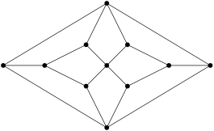

Pri predmetu se bomo najprej naučili, kaj točno so
izjave in kako jih matematično
formalizirati. Eden pomembnih ciljev tega je
eksakten opis sklepanja, ki ga uporabljamo počez
matematike. Te koncepte bomo najprej razvili v osnovnem
izjavnem računu, nato pa ga bomo še posplošili do
predikatnega računa, s katerim bomo podrobneje
raziskali matematične izjave.
Zgled 1. Nepridipravi so razbili vhodna
vrata FMF. Glavni osumljenci so študenti Ana, Bor in Cveto.
Ko jih vprašamo, kdo je kriv, odgovorijo z naslednjimi
izjavami:
Ana: “Bor je kriv, Cveto pa ne.”
Bor: “Če je kriva Ana, je kriv tudi Cveto.”
Cveto: “Jaz nisem kriv, toda vsaj eden od drugih dveh
je kriv.”
Pri predmetu se bomo naučili, kako lahko na
sistematičen način odkrijemo, kdo je lagal, če
krivi lažejo, nedolžni pa govorijo resnico.
Za tem bomo pri predmetu spoznali nekaj osnovnih
diskretnih struktur, po katerih se ta predmet imenuje.
Najprej bomo raziskali relacije, s katerimi
opisujemo odnose med elementi dane množice. Pomemben poseben
primer teh so urejenosti, ki posplošujejo običajne
ureditve števil po velikosti. Najbolj podrobno si bomo
ogledali grafe, s katerimi lahko abstraktno
predstavimo mnogo pomembnih primerov relacij.
Zgled 2. Graf je diskretna struktura,
pri kateri dano množico vozlišč povežemo s
povezavami. Z grafi lahko opišemo veliko različnih
vrst omrežij, na primer internetno omrežje, omrežje
prijateljskih povezav na Facebooku, omrežja veriženja blokov
(kriptovalute) …
Konkreten graf na spodnji sliki se imenuje
Petersenov graf. Ta
graf bomo tekom predmeta večkrat srečali. Na koncu predmeta
bomo znali dokazati, da se tega grafa ne da
narisati v ravnini, brez da bi se vsaj dve povezavi
sekali.
N. Prijatelj, Osnove matematične logike
I, DMFA-založništvo, Ljubljana, 1992.
Izjavni račun
V tem poglavju si bomo pogledali, kako
formaliziramo preproste izjave in kako
dokazujemo njihovo veljavnost oziroma
neveljavnost.
Izjave in izjavni
vezniki
Izjava je poved,
ki je bodisi resnična bodisi lažna.
Zgled 1.1.
Ena in ena je tri. Lažna izjava.
Ena in ena je dve. Resnična izjava.
Koliko je ena in ena? Ni izjava.
Pojdimo na kavo! Ni izjava.
Izjave lahko razdelimo na dve skupini po
vsebini, in sicer:
resnične
izjave, ki imajo resničnostno vrednost
\(1\) ali \(\top\) ali
true,
lažne izjave,
ki imajo resničnostno vrednost \(0\) ali \(\bot\) ali
false.
Po zgradbi oziroma obliki pa izjave
razdelimo na:
osnovne, ki ne
vsebujejo izjavnih veznikov,
sestavljene,
ki vsebujejo izjavne veznike.
Zgled 1.2.
Vreme je lepo. Osnovna izjava.
Špela gre v hribe. Osnovna izjava.
Vreme je lepo in Špela gre v hribe.
Sestavljena izjava.
Če je vreme lepo, potem gre Špela v
hribe. Sestavljena izjava.
Špela ne gre v hribe. Sestavljena
izjava.
Naj bo \(n \in
\mathbf{N}_0\). Izjavni veznik reda
\(n\)
(ali \(n\)-mestni izjavni
veznik) je funkcija, ki vsaki urejeni
\(n\)-terici ničel in enic
priredi vrednost \(0\) ali
\(1\).
Zgled 1.3.
Primer izjavnega veznika reda \(1\) je
negacija. Simbol za
ta veznik je \(\lnot\). Če
je \(p\) izjava, njeno
negacijo označimo kot \(\lnot
p\) in preberemo kot ne \(p\) ali kot ni res, da
velja \(p\). Negacija
\(1\)-terici \(0\) priredi vrednost \(1\), \(1\)-terici \(1\) pa priredi vrednost \(0\).
Resničnostna tabela negacije
\(p\)
\(\lnot p\)
0
1
1
0
Oglejmo si nekaj pomembnih dvomestnih izjavnih
veznikov. Njihovi predpisi so zbrani v tabeli.
Konjunkcija
izjav \(p\) in \(q\) ima simbol \(p \land q\), kar preberemo kot
\(p\) in \(q\).
Disjunkcija
izjav \(p\) in \(q\) ima simbol \(p \lor q\), kar preberemo kot
\(p\) ali \(q\).
Implikacija
izjav \(p\) in \(q\) ima simbol \(p \Rightarrow q\), kar
preberemo kot če \(p\),
potem \(q\) ali kot
iz \(p\) sledi \(q\) ali kot \(p\) je zadosten pogoj za \(q\) ali kot \(q\) je potreben pogoj za \(p\).
Ekvivalenca
izjav \(p\) in \(q\) ima simbol \(p \Leftrightarrow q\), kar
preberemo kot \(p\)
natanko tedaj, ko \(q\) ali kot \(p\), če in samo če \(q\) ali kot \(p\) je ekvivalentno \(q\).
Resničnostna tabela nekaterih pomembnih dvomestnih
izjavnih veznikov
\(p\)
\(q\)
\(p \land q\)
\(p \lor q\)
\(p \Rightarrow q\)
\(p \Leftrightarrow q\)
1
1
1
1
1
1
1
0
0
1
0
0
0
1
0
1
1
0
0
0
0
0
1
1
Izjavni veznik reda \(0\) je funkcija iz množice
urejenih \(0\)-teric ničel
in enic. Obstaja natanko ena taka \(0\)-terica, in sicer prazna
\(0\)-terica. Izjavni
veznik reda \(0\) je torej
natanko določen s sliko te \(0\)-terice, za kar imamo dve
možnosti, \(0\) ali \(1\).
Izjavni veznik reda \(0\), ki ima vselej resničnostno
vrednost \(0\), imenujemo
0 in preberemo kot
lažna izjava.
Izjavni veznik reda \(0\), ki ima vselej resničnostno
vrednost \(1\), imenujemo
1 in preberemo kot
resnična izjava.
Izjavnima veznikoma reda \(0\) pravimo tudi
izjavni
konstanti.
Glede na zgornjo obravnavamo izjavnih veznikov redov
\(0\), \(1\) in \(2\) se lahko vprašamo, koliko
je vseh \(n\)-mestnih
izjavnih veznikov za poljuben \(n
\in \mathbf{N}_0\). Vsak tak veznik je enolično
določen s svojo resničnostno tabelo, v kateri zabeležimo
vrednosti veznika v izjavnih
spremenljivkah\(p_1, p_2, \dots, p_n\), kjer
vsak \(p_i\) zavzema
vrednosti \(0\) ali \(1\).
Število vseh \(n\)-mestnih izjavnih veznikov
torej izračunamo tako, da preštejemo število vseh možnih
resničnostnih tabel. Število vrstic tabele je enako \(2^n\), število vseh tabel pa je
zato enako \(2^{2^n}\).
Hitra rast števila \(n\)-mestnih izjavnih
veznikov
\(n\)
\(2^n\)
\(2^{2^n}\)
0
1
2
1
2
4
2
4
16
3
8
256
4
16
65536
5
32
\(\sim 4 \cdot 10^9\)
6
64
\(\sim 2 \cdot 10^{19}\)
Izjavni izrazi
Izjavni izraz
definiramo induktivno na naslednji način:
Osnovni izraz 1: Vsaka izjavna
konstanta (torej \(0\)
ali \(1\)) je izjavni
izraz.
Osnovni izraz 2: Vsaka izjavna
spremenljivka\(p_1, p_2,
\dots\) je izjavni izraz.
Sestavljeni izraz: Če je \(f\)izjavni veznik
reda \(n\) in so \(A_1, A_2, \dots, A_n\) izjavni
izrazi, potem je \((f(A_1,A_2,\dots,A_n))\)
izjavni izraz.
Izjavni izrazi so torej izjave, ki jih dobimo iz \(0,1\) in izjavnih spremenljivk
z (večkratno) uporabo izjavnih veznikov.
Zgled 1.4. Naj bodo \(p,q,r\) izjavne spremenljivke.
Tvorimo lahko izjavne izraze \((p
\Rightarrow q)\), \((\lnot
r)\), \(((p \Rightarrow q)
\land (\lnot r))\), …
Pri pisanju bolj zakompliciranih izjavnih izrazov se
prične pojavljati mnogo oklepajev. V izogib pisanju
prevelikega števila teh oklepajev uporabljamo naslednji
dogovor o prednostnem vrstnem redu
veznikov:
\(\lnot\) ima
prednost pred dvomestnimi vezniki,
veznik iz \((\land, \lor,
\Rightarrow, \Leftrightarrow)\) ima prednost pred
vezniki desno od sebe,
če isti veznik nastopi večkrat zapored, ima levi
nastop prednost pred desnim,
zunanji oklepaj spuščamo.
Zgled 1.5.
Izjavni izraz \((p
\Rightarrow (q \land r))\) pišemo krajše kot \(p \Rightarrow q \land
r\).
Izraz \(p \Rightarrow q
\Rightarrow r \Rightarrow s\) je okrajšava za izjavni
izraz \((((p \Rightarrow q)
\Rightarrow r) \Rightarrow s)\).
Izraz \(p \lor \lnot q
\Leftrightarrow r \Rightarrow q\) je okrajšava za
izjavni izraz \((( p \lor (\lnot
q)) \Leftrightarrow (r \Rightarrow p))\).
Izjavni izrazi vsebujejo izjavne spremenljivke, zato
določajo neko resničnostno tabelo in s tem tudi nek izjavni
veznik.
Zgled 1.6. Naj bodo \(p,q,r\) izjavne spremenljivke
in naj bo \(f(p,q,r) = (p
\Rightarrow q) \land \lnot r\) izjavni izraz.
Izračunamo lahko resničnostno tabelo tega izraza in na ta
način lahko na \(f\)
gledamo kot na izjavni veznik reda \(3\).
Če je izjavni izraz resničen pri vseh naborih
svojih izjavnih spremenljivk, mu rečemo
tavtologija. Če je
lažen pri vseh naborih, mu rečemo
protislovje. Če ni
niti tavtologija niti protislovje, je
kontingenten.
Zgled 1.7.
Izjavna izraza \(1\)
in \(p \lor \lnot p\) sta
tavtologiji.
Izjavna izraza \(0\), \(p \land \lnot p\) sta
protislovji.
\(p \Rightarrow q \Leftrightarrow \lnot
p \lor q\)
\(p \land \lnot (q \Rightarrow
p)\)
\(p \land (\lnot q \lor p)\)
1
1
1
0
1
1
0
1
0
1
0
1
1
0
0
0
0
1
0
0
Vidimo, da je prvi izraz tavtologija, drugi protislovje,
tretji pa kontingenten.
Domača naloga 1.1. Prepričaj se, da je
resničnostna tabela izjavnega izraza \(p \land (\lnot q \lor p)\)
enaka resničnosti tabeli izjavnega izraza \(p\). Sklepaj, da je izjava
\(p \land (\lnot q \lor p)
\Leftrightarrow p\) tavtologija. Na podoben način se
prepričaj, da je izraz \(p
\Rightarrow q \Leftrightarrow \lnot q \Rightarrow \lnot
p\) tavtologija.
Naj bosta \(A\) in \(B\) izjavna izraza. Kadar je
\(A \Leftrightarrow B\)
tavtologija, tedaj rečemo, da sta izraza \(A\) in \(B\)enakovredna. Z
drugimi besedami, izraza \(A\) in \(B\) sta enakovrednosta, kadar
imata enaka stolpca v resničnostni tabeli. V tem primeru
uporabimo oznako \(A \sim
B\).
Zgled 1.8. Velja \(p \Rightarrow q \sim \lnot p \lor q
\sim \lnot q \Rightarrow \lnot p\) in \(p \land (\lnot q \lor p) \sim
p\).
Enakovrednemu paru izjavnih izrazov \(A \sim B\) rečemo
zakoni izjavnega
računa. V vsakem izjavnem izrazu lahko
poljuben izraz zamenjamo z enakovrednim in s tem
poenostavimo izjavni izraz.
\(A \land A \sim
A\), \(A \lor A \sim
A\)
(idempotentnost)
\(A \land B \sim B \land
A\), \(A \lor B \sim B \lor
A\)
(komutativnost)
\(A \land (B \land C) \sim
(A \land B) \land C\), \(A
\lor (B \lor C) \sim (A \lor B) \lor C\)
(asociativnost)
\(A \land (A \lor B) \sim
A\), \(A \lor (A \land B)
\sim A\)
(absorpcija)
\(A \land (B \lor C) \sim
(A \land B) \lor (A \land C)\), \(A \lor (B \land C) \sim (A \lor B)
\land (A \lor C)\)
(distributivnost)
\(\lnot \lnot A \sim
A\) (dvojna
negacija)
\(\lnot (A \land B) \sim
\lnot A \lor \lnot B\), \(\lnot (A \lor B) \sim \lnot A \land
\lnot B\) (De Morganova
zakona)
\(A \Rightarrow B \sim
\lnot B \Rightarrow \lnot A\)
(kontrapozicija),
\(A \Rightarrow B \sim \lnot A
\lor B\)
\(A \Leftrightarrow B \sim
(A \Rightarrow B) \land (B \Rightarrow A)\)
Zgled 1.10. Izjavni izraz iz zadnjega
zgleda lahko z naštetimi zakoni poenostavimo do \[p \Rightarrow (p \Rightarrow q) \sim
\lnot p \lor (\lnot p \lor q) \sim
(\lnot p \lor \lnot p) \lor q \sim
\lnot p \lor q \sim
p \Rightarrow q.\]
DNO in KNO
Do sedaj smo govorili o tem, kako za dan izjavni izraz
določimo njegovo resničnostno tabelo. V tem razdelku si bomo
zastavili obratno nalogo. Recimo, da je dana resničnostna
tabela nekega kontingentnega izjavnega izraza \(A\). Pokazali bomo, da lahko
zgolj z uporabo izjavnih veznikov \(\lnot\), \(\land\), \(\lor\) sestavimo izjavni izraz
\(D\), tako da bo \(A \sim D\). Za začetek si
oglejmo, kako to naredimo na enem konkretnem primeru.
Zgled 1.11. Naj bo izjavni izraz \(A\) dan z resničnostno tabelo
\(T\).
Resničnostna tabela \(T\) izjavnega izraza \(A\)
\(p\)
\(q\)
\(r\)
\(A\)
1
1
1
0
1
1
0
1
1
0
1
0
1
0
0
0
0
1
1
0
0
1
0
1
0
0
1
0
0
0
0
1
Iskani izjavni izraz \(D\) mora biti resničen natanko
v 2., 6. in 8. vrstici tabele \(T\). To je res natanko tedaj,
ko velja \(p \land q \land \lnot
r\) ali \(\lnot p \land q
\land \lnot r\) ali \(\lnot
p \land \lnot q \land \lnot r\). Torej lahko vzamemo
preprosto \[D = (p \land q \land
\lnot r) \lor (\lnot p \land q \land \lnot r) \lor (\lnot p
\land \lnot q \land \lnot r)\] in res velja \(D \sim A\). Dobljeni izjavni
izraz \(D\) lahko še
nekoliko poenostavimo.
Domača naloga 1.2. Z uporabo zakonov
izjavnega računa se prepričaj, da velja \(D \sim \lnot (p \Rightarrow q
\Rightarrow r)\).
Naj bo zdaj \(A\)
poljuben kontingenten izjavni izraz in \(T\) njegova resničnostna
tabela. Disjunktivna normalna
oblika izraza \(A\) je disjunkcija osnovnih
konjunkcij tistih vrstic, kjer je \(A\) resničen. Pri tem je
osnovna konjunkcija neke vrstice konjunkcija tistih izjavnih
spremenljivk, ki so v tej vrstici resnične, in negacij
tistih izjavnih spremenljivk, ki so v tej vrstici lažne.
Disjunktivno normalno obliko izraza \(A\) krajše pišemo kot \(\mathop{\mathrm{DNO}}(A)\).
Zgled 1.12. V zadnjem zgledu je \(\mathop{\mathrm{DNO}}(A) =
D\).
Disjunktivna normalna oblika \(\mathop{\mathrm{DNO}}(A)\) je
izjavni izraz, ki je zapisan le z uporabo izjavnih veznikov
\(\lnot\), \(\land\), \(\lor\). Preverimo še, da je ta
izraz res enakovreden začetnemu izrazu \(A\).
Trditev 1.1. Naj bo \(A\) kontingenten izraz. Potem
je \(A \sim
\mathop{\mathrm{DNO}}(A)\).
Proof. Naj bo \(T\) resničnostna tabela izraza
\(A\). Naj bo \(i\) poljubna vrstica \(T\). Dokazati želimo, da imata
\(T\) in \(\mathop{\mathrm{DNO}}(A)\) v
tej vrstici enako resničnostno vrednost.
Če je \(A\) resničen v
vrstici \(i\):
Po definiciji disjunktivne normalne oblike je \(\mathop{\mathrm{DNO}}(A)\)
disjunkcija osnovnih konjunkcij vrstic \(T\). V posebnem osnovna
konjunkcija vrstice \(i\)
nastopa v \(\mathop{\mathrm{DNO}}(A)\). Ta
osnovna konjunkcija je v vrstici \(i\) resnična, zato je resnična
tudi disjunkcija \(\mathop{\mathrm{DNO}}(A)\).
\(\checkmark\)
Če je \(\mathop{\mathrm{DNO}}(A)\)
resničen v vrstici \(i\):
V tem primeru mora biti resničen vsaj en člen disjunkcije
\(\mathop{\mathrm{DNO}}(A)\),
torej mora biti v vrstici \(i\) resnična osnovna
konjunkcija neke vrstice \(j\). Osnovna konjunkcija
vrstice \(j\) je izraz, ki
je v vrstici \(j\)
resničen, v vseh ostalih vrsticah pa lažen. Od tod sledi, da
je \(i = j\). Torej \(\mathop{\mathrm{DNO}}(A)\)
vsebuje osnovno konjunkcijo vrstice \(i\), zato je \(A\) resničen v vrstici \(i\). \(\checkmark\)
Res imata torej \(T\) in
\(\mathop{\mathrm{DNO}}(A)\)
enake resničnostne vrednosti, torej sta \(A\) in \(\mathop{\mathrm{DNO}}(A)\)
enakovredna. ◻
V sestavljanju disjunktivne normalne oblike smo opazovali
vrstice, kjer je dan izjavni izraz \(A\) resničen. Analogno bi lahko
opazovali vrstice, kjer je izraz \(A\) lažen, in sestavili izjavni
izraz, ki bo lažen natanko v vrsticah, v katerih je
\(A\) lažen. Na primeru
pojasnimo, kako lahko na ta način dobimo alternativen
izjavni izraz, ki je zopet izražen le z vezniki \(\lnot\), \(\land\), \(\lor\) in je enakovreden izrazu
\(A\).
Zgled 1.13. Naj bo \(T\) resničnostna tabela
izjavnega izraza \(A\) iz
predzadnjega zgleda. Ta tabela je lažna v vrsticah \(1,3,4,5,7\). Sestavimo izjavni
izraz \(K\), ki bo lažen
natanko v teh vrsticah. To je enakovredno zahtevi, da je
\(K\) resničen natanko
tedaj, ko nismo v nobeni od vrstic \(1,3,4,5,7\). Slednjo zahtevo
lahko izrazimo kot konjunkcijo osnovnih disjunkcij
vrstic \(1,3,4,5,7\), se
pravi kot \[K =
(\lnot p \lor \lnot q \lor \lnot r) \land
(\lnot p \lor q \lor \lnot r) \land
(\lnot p \lor q \lor r) \land
(o \lor \lnot q \lor \lnot r) \land
(p \lor q \lor \lnot r).\] Tako sestavljenemu
izravnemu izrazu \(K\)
pravimo konjunktivna normalna
oblika izraza \(A\), krajše \(\mathop{\mathrm{KNO}}(A)\).
Sorodno kot za disjunktivno normalno obliko se prepričamo,
da velja \(\mathop{\mathrm{KNO}}(A) \sim
A\).
Sklepanje v izjavnem
računu
Sklep je končno
zaporedje izjav \(p_1, p_2, \dots,
p_k, z\). Pri tem izjavam \(p_1, p_2, \dots, p_k\) pravimo
predpostavke, izjavi
\(z\) pa
zaključek.
Zgled 1.14. Opazujmo naslednje zaporedje
izjav.
\(p_1\):
Če je ta žival ptič, potem ima krila.
\(p_2\):
Ta žival nima kril.
\(z\):
Ta žival ni ptič.
Imamo torej sklep \(p_1, p_2,
z\). Ta sklep lahko zapišemo nekoliko bolj natančno z
upoštevanjem sestavljene strukture izjav v sklepu. Uvedimo
izjavi \(p\) in \(q\) kot:
\(p\):
Ta žival je ptič.
\(q\):
Ta žival ima krila.
Sklep \(p_1, p_2, z\)
lahko torej zapišemo v obliki \(p
\Rightarrow q, \ \lnot q, \ \lnot p\).
Zaporedje izjavnih izrazov \(A_1, A_2, \dots, A_k, B\) je
pravilen sklep (rekli
bomo tudi veljaven
sklep), če je zaključek \(B\) resničen pri vseh tistih
naborih izjavnih spremenljivk, pri katerih so resnične vse
predpostavke \(A_1, A_2, \dots,
A_k\). V tem primeru pišemo \(A_1, A_2, \dots, A_k \models
B\).
Zgled 1.15. Sklep iz zadnjega zgleda smo
zapisali v obliki \(p \Rightarrow
q, \ \lnot q, \ \lnot p\). Če pri tem gledamo na
\(p\) in \(q\) kot na izjavni
spremenljivki (in ne kot oznaki za konkretne izjave), se
lahko vprašamo o veljavnosti sklepa. V ta namen sestavimo
resničnostno tabelo vseh izjavnih izrazov v sklepu.
Edini nabor izjavnih spremenljivk, pri katerih sta
resnični obe predpostavki sklepa, je nabor \((p,q)=(0,0)\). Pri tem naboru
je resničen tudi zaključek sklepa. Sklep je torej veljaven,
se pravi \(p \Rightarrow q, \
\lnot q \models \lnot p\).
Zabeležimo nekaj pomembnih veljavnih sklepov, ki jim
pravimo osnovna pravila
sklepanja.
\(A, \ A \Rightarrow B
\models B\) (modus ponens
(MP))
\(A \Rightarrow B, \ B
\Rightarrow C \models A \Rightarrow C\)
(hipotetični silogizem
(HS))
\(A \land B \models
A\) (poenostavitev
(Po))
\(A, \ B \models A \land
B\) (združitev
(Zd))
\(A \models A \lor
B\) (pridružitev
(Pr))
Drugo od teh pravil smo spoznali v zadnjem zgledu in se
tudi prepričali o veljavnosti. Na podoben način preverimo
veljavnosti preostalih.
Pri večjem številu izjavnih spremenljivk je lahko
preverjanje veljavnosti sklepa z resničnostno tabelo precej
zamudno.
Zgled 1.16. Ali je sklep \[p \Rightarrow q, \ p \lor r, \ q
\Rightarrow s, \ r \Rightarrow t, \ \lnot s \models
t\] veljaven? Ta sklep vsebuje \(5\) izjavnih spremenljivk, zato
bi za preverjanje veljavnosti morali sestaviti resničnostno
tabelo z \(2^5 = 32\)
vrsticami.
V takih primerih si lahko pomagamo z naslednjim
alternativnim načinom preverjanja veljavnosti sklepa.
Izrek 1.1 (o naravni dedukciji). Naj
bodo \(A_1, A_2, \dots,
A_k\) izjavni izrazi. Če obstaja zaporedje izjavnih
izrazov \(B_1, B_2, \dots,
B_n\), tako da za vsak \(i
= 1, 2, \dots, n\) velja vsaj ena od možnosti:
\(B_i\) je eden on
\(A_1, A_2, \dots,
A_k\),
\(B_i\) je
tavtologija,
\(B_i \sim B_j\) za
nek \(j < i\),
\(B_i\) logično
sledi iz \(B_1, B_2, \dots,
B_{i-1}\) po enem od osnovnih pravil
sklepanja,
potem velja \(A_1, A_2, \dots,
A_k \models B\).
Proof. Dokazujemo z indukcijo na \(n\).
Baza indukcije je \(n =
1\). V tem primeru je po predpostavki izjavni izraz
\(B_1\) lahko le eden od
\(A_1, A_2, \dots, A_k\)
ali tavtologija. V vsakem od teh primerov velja \(A_1, A_2, \dots, A_k \models
B\). \(\checkmark\)
Predpostavimo zdaj, da trditev že velja za \(1, 2, \dots, n-1\) in dokažimo
veljavnost za \(n\). Drži
torej \(A_1, A_2, \dots, A_k
\models B_j\) za vsak \(j =
1, 2, \dots, n-1\). Obravnavajmo različne možnosti
glede na to, katera od predpostavk velja za \(B_n\).
Če je \(B_n\) eden
od \(A_1, A_2, \dots,
A_k\), potem velja \(A_1,
A_2, \dots, A_k \models B\). \(\checkmark\)
Če je \(B_n\)
tavtologija, potem velja \(A_1,
A_2, \dots, A_k \models B\). \(\checkmark\)
Če je \(B_n \sim
B_j\) za nek \(j <
n\), potem po indukcijski predpostavki \(A_1, A_2, \dots, A_k \models
B_j\) velja \(A_1, A_2,
\dots, A_k \models B\). \(\checkmark\)
Naj nazadnje \(B_n\)
logično sledi iz \(B_1, B_2,
\dots, B_{n-1}\). Ker vsak \(B_j\) za \(j < n\) logično sledi iz
\(A_1, A_2, \dots, A_k\),
velja tudi \(A_1, A_2, \dots, A_k
\models B\). \(\checkmark\)
◻
Zgled 1.17. S pomočjo izreka o naravni
dedukciji utemeljimo veljavnost sklepa iz zadnjega
zgleda.
Uporaba naravne dedukcije za dokazovanje
veljavnosti sklepa
\(i\)
\(B_i\)
utemeljitev
1
\(p
\Rightarrow q\)
predpostavka
2
\(p
\lor r\)
predpostavka
3
\(q
\Rightarrow s\)
predpostavka
4
\(r
\Rightarrow t\)
predpostavka
5
\(\lnot s\)
predpostavka
6
\(p
\Rightarrow s\)
HS(1,3)
7
\(\lnot p\)
MT(6,5)
8
\(r
\lor p\)
\(\sim\) 2
9
\(r\)
DS(8,7)
10
\(t\)
MP(9,4)
Do zdaj smo se ukvarjali z dokazovanjem veljavnosti
danega sklepa. Oglejmo si še, kako pokažemo, da sklep
ni veljaven. Namesto tega, da sestavimo
resničnostno tabelo vseh izjavnih izrazov v sklepu, lahko
preprosteje pokažemo le na tisto vrstico resničnoste tabele,
ki opazi neveljavnost sklepa. To pomeni, da poiščemo nek
nabor vrednosti izjavnih spremenljivk, pri katerem so vse
predpostavke resnične, zaključek pa je lažen. Takemu naboru
rečemo
protiprimer.
Zgled 1.18. Opazujmo naslednji
sklep.
\(p_1\):
Ta žival ima krila ali pa ni ptič.
\(p_2\):
Če je ta žival pritč, potem leže jajca.
\(p_3\):
Ta žival nima kril.
\(z\):
Torej ta žival ne leže jajc.
Ta sklep lahko zapišemo nekoliko bolj natančno, če
uvedemo izjave \(p,q,r\)
kot:
\(p\):
Ta žival ima krila.
\(q\):
Ta žival je ptič.
\(r\):
Ta žival leže jajca.
Sklep lahko torej zapišemo na naslednji način: \[p \lor \lnot q, \ q \Rightarrow r, \
\lnot p \models \lnot r.\]
Poiščimo protiprimer. Želimo, da so resnične vse
predpostavke, zaključek pa lažen. Vzeti moramo torej \(r = 1\) in \(p = 0\), od koder iz prve
predpostavke dobimo še \(q =
0\). S to izbiro je tudi druga predpostavka resnična.
Nabor \(p = 0, q = 0, r =
1\) je torej protiprimer, ki opazi, da sklep ni
pravilen.
Če to prevedemo nazaj v človeški jezik, protiprimer torej
predstavlja žival, ki nima kril, ni ptič in leže jajca.
Konkretna taka žival je na primer kača ali krokodil.
Pri dokazovanju bolj kompleksnih sklepov si lahko včasih
pomagamo tudi s kakšnimi pomožnimi
sklepi. Pogledali si bomo tri take
osnovne pomožne sklepe, in sicer pogojni sklep, sklepanje s
protislovjem in analiza primerov. Vse te pomožne sklepe bomo
izpeljali s pomočjo naslednje trditve.
Trditev 1.2. Velja \(A_1, A_2, \dots, A_k \models
B\), če in samo če je \(A_1
\land A_2 \land \cdot \land A_k \models B\)
tavtologija.
Proof. Predpostavimo najprej, da velja \(A_1, A_2, \dots, A_k \models
B\). Če je \(A_1 \land A_2
\land \cdots \land A_k\) resnična izjava, potem so
resnične vse izjave \(A_i\)
za \(i = 1,2, \dots, k\),
torej so vse predpostavke \(A_1,
A_2, \dots, A_k\) resnične. Od tod sledi, da je
resničen tudi zaključek \(B\). Torej je \(A_1 \land A_2 \land \cdot \land A_k
\models B\) tavtologija. \(\checkmark\)
Predpostavimo sedaj, da je \(A_1 \land A_2 \land \cdot \land A_k
\models B\) tavtologija. Dokazati želimo veljavnost
sklepa \(A_1, A_2, \dots, A_k
\models B\). Predpostavimo torej, da so resnične vse
predpostavke \(A_1, A_2, \dots,
A_k\). Potem je resnična tudi njihova konjunkcija
\(A_1 \land A_2 \land \cdots \land
A_k\). Iz predpostavke od tod sledi, da mora biti
resnična tudi izjava \(B\).
Sklep \(A_1, A_2, \dots, A_k
\models B\) je torej veljaven. \(\checkmark\) ◻
Pogojni sklep (PS)
uporabimo, kadar dokazujemo sklep, v katerem ima zaključek
obliko implikacije. Če želimo sklepati na zaključek \(B \Rightarrow C\), dodamo
izjavo \(B\) med
predpostavke in skušamo sklepati na zaključek \(C\). Veljavnost tega pomožnega
sklepa sledi iz naslednjega izreka.
Izrek 1.2 (o pogojnem sklepu). Velja
\(A_1, A_2, \dots, A_k \models B
\Rightarrow C\), če in samo če velja \(A_1, A_2, \dots, A_k, B \models
C\).
Proof. Naj bo \(A =
A_1 \land A_2 \land \cdots \land A_k\). Po zadnji
trditvi je dovolj dokazati, da je \(A \Rightarrow (B \Rightarrow
C)\) tavtologija, če in samo če je \(A \land B \Rightarrow C\)
tavtologija. Ta dva izjavna izraza pa sta si v resnici
enakovredna, saj velja \[A
\Rightarrow (B \Rightarrow C) \sim \lnot A \lor (\lnot B
\lor C) \sim (\lnot A \lor \lnot B) \lor C \sim \lnot (A
\land B) \lor C \sim A \land B \Rightarrow C.\]
Izraza sta torej bodisi oba tavtologiji bodisi nobenen od
njiju ni tavtologija. S tem je izrek dokazan. ◻
Zgled 1.19. Dokažimo veljavnost sklepa
\[p \Rightarrow q \lor r, \ \lnot
r \models p \Rightarrow q.\] Ker ima zaključek obliko
implikacije, lahko uporabimo pogojni sklep.
Uporaba pogojnega sklepa
\(i\)
\(B_i\)
utemeljitev
1
\(p
\Rightarrow q \lor r\)
predpostavka
2
\(\lnot r\)
predpostavka
3.1
\(p\)
predpostavka PS
3.2
\(q
\lor r\)
MP(3.1, 1)
3.3
\(q\)
DS(3.2, 2)
3
\(p \Rightarrow q\)
PS(3.1–3.3)
Pomožni sklep s
protislovjem (RA1) lahko uporabimo kadar
koli. Če želimo sklepati na zaključek \(B\), dodamo izjavo \(\lnot B\) med predpostavke in
skušamo sklepati na zaključek \(0\). To je še posebej uporabno,
kadar ima zaključek obliko negacije \(\lnot B\), saj v tem primeru
dodatna predpostavka postane \(\lnot \lnot B \sim B\).
Veljavnost tega pomožnega sklepa sledi iz naslednjega
izreka.
Izrek 1.3 (o sklepu s protislovjem).
Velja \(A_1, A_2, \dots, A_k
\models B\), če in samo če velja \(A_1, A_2, \dots, A_k, \lnot B \models
0\).
Proof. Naj bo \(A =
A_1 \land A_2 \land \cdots \land A_k\). Kot v dokazu
zadnjega izreka je dovolj dokazati, da je \(A \Rightarrow B\) tavtologija,
če in samo če je \(A \land \lnot B
\Rightarrow 0\) tavtologija. Ta dva izjavna izraza pa
sta si v resnici enakovredna, saj velja \[A \land \lnot B \Rightarrow 0 \sim
\lnot A \lor \lnot \lnot B \sim
\lnot A \lor B \sim
A \Rightarrow B.\] ◻
Zgled 1.20. Dokažimo veljavnost sklepa
\[p \Rightarrow \lnot (q
\Rightarrow r), \ q \land s \Rightarrow r, \ s \models \lnot
p.\] Ker ima zaključek obliko negacije, še posebej
radi uporabimo sklepanje s protislovjem.
Uporaba sklepa s protislovjem
\(i\)
\(B_i\)
utemeljitev
1
\(p
\Rightarrow \lnot(q \Rightarrow r)\)
predpostavka
2
\(q
\land s \Rightarrow r\)
predpostavka
3
\(s\)
predpostavka
4.1
\(\lnot \lnot p\)
predpostavka RA
4.2
\(p\)
\(\sim\) 4.1
4.3
\(\lnot (q \Rightarrow r)\)
MP(4.2, 1)
4.4
\(q
\land \lnot r\)
\(\sim\) 4.3
4.5
\(q\)
Po(4.4)
4.6
\(q
\land s\)
Zd(4.5, 3)
4.7
\(r\)
MP(4.6, 2)
4.8
\(\lnot r \land q\)
\(\sim\) 4.4
4.9
\(\lnot r\)
Po(4.8)
4.10
\(r
\land \lnot r\)
Zd(4.7, 4.9)
4.11
\(0\)
\(\sim\) 4.10
4
\(\lnot p\)
RA(4.1–4.11)
Pomožni sklep analiza
primerov (AP) uporabimo, kadar
dokazujemo sklep, v katerem ima ena od predpostavk obliko
disjunkcije \(B_1 \lor
B_2\). V tem primeru lahko sklep razdelimo na dva
preprostejša sklepa, pri čemer prvemu dodamo predpostavko
\(B_1\), drugemu pa
predpostavko \(B_2\).
Podobno kot pri prejšnjih dveh pomožnih sklepih veljavnost
tega pomožnega sklepa sledi iz naslednjega izreka.
Izrek 1.4 (o analizi primerov). Velja
\(A_1, A_2, \dots, A_k, B_1 \lor
B_2 \models C\), če in samo če veljata oba sklepa
\(A_1, A_2, \dots, A_k, B_1
\models C\) in \(A_1, A_2,
\dots, A_k, B_2 \models C\).
Domača naloga 1.3. Dokaži izrek o
analizi primerov.
Zgled 1.21. Dokažimo veljavnost sklepa
\[p \Rightarrow r, \ q
\Rightarrow r, \ p \lor q \models r.\] Tretja
predpostavka ima obliko disjunkcije, zato lahko sklep
dokažemo s pomočjo analize primerov.
Uporaba analize primerov
\(i\)
\(B_i\)
utemeljitev
1
\(p
\Rightarrow r\)
predpostavka
2
\(q
\Rightarrow r\)
predpostavka
3
\(p
\lor q\)
predpostavka
4.1.1
\(p\)
predpostavka AP(3)
4.1.2
\(r\)
MP(4.1.1, 1)
4.2.1
\(q\)
predpostavka AP(3)
4.2.2
\(r\)
MP(4.1.1, 2)
4.
\(r\)
AP(3, 4.1.1–4.1.2,
4.2.1–4.2.2)
Predikatni račun
Predikatni račun je nadgradnja izjavnega računa,
ki omogoča bolj natančno logično izražanje. Najprej si bomo
na konkretnih primerih pogledali, katere novosti prinaša
predikatni račun. Za tem bomo te formalno definirali in
razvili podobno teorijo kot v izjavnem računu.
Motivacija
Na konkretnih zgledih si oglejmo nekaj simbolov in
formul, ki jih bomo videli v predikatnem računu. Ti zgledi
nam bodo pomagali, da bomo v naslednjem razdelku lažje
predelali formalne definicije predikatnega računa.
Zgled 2.1. Oglejmo si naslednji sklep,
zapisan v slovenščini.
\(p_1\):
Vsak zajec ljubi korenje.
\(p_2\):
Feliks je zajec.
\(z\):
Torej Feliks ljubi korenje.
V izjavnem računu ta sklep zapišemo kot \(p_1, p_2 \models z\). Seveda pa
ta sklep v izjavnem računu ni veljaven, protiprimer je
namreč nabor \(p_1 = 1, p_2 = 1, z
= 0\).
Kljub temu se zdi, da je ta sklep v slovenščini vsekakor
pravilen. Predikatni račun je nadgradnja izjavnega računa, v
katerem izjavne spremeljivke \(p_1, p_2, z\) obravnavamo
nekoliko podrobneje, tako da bo ta sklep pravilen tudi v tem
novem računu.
Uvedimo naslednje oznake:
\(Z(x)\):
\(x\) je zajec.
\(K(x)\):
\(x\) ljubi korenje.
\(a\):
Feliks
\(\forall x\):
za vsak \(x\)
S temi oznakami lahko sklep zapišemo bolj natančno
takole:
\(p_1\):
\(\forall x \colon (Z(x)
\Rightarrow K(x))\)
\(p_2\):
\(Z(a)\)
\(z\):
\(K(a)\)
V predikatnem jeziku bomo torej poleg izjavnih vezikov in
ločil iz izjavnega računa imeli
individualne
spremenljivke (\(x\)),
individualne
konstante (\(a\)),
predikate (\(Z\), \(K\)) in
univerzalni
kvantifikator (\(\forall\)).
Zgled 2.2. Prevedimo nekaj izjav iz
slovenščine v nov jezik predikatnega računa, kot smo to
storili v zadnjem zgledu. Izjave so naslednje:
Vsi gasilci so hrabri.
Nekateri gasilci so hrabri.
Nekateri gasilci niso hrabri.
Noben gasilec ni hraber.
Uvedimo naslednje oznake:
\(G(x)\):
\(x\) je gasilec.
\(H(x)\):
\(x\) je hraber.
\(\exists x\):
obstaja \(x\)
Izjave v slovenščini lahko s temi oznakami zapišemo na
naslednji način:
\(\forall x \colon (G(x)
\Rightarrow H(x))\)
\(\exists x \colon (G(x)
\land H(x))\)
\(\exists x \colon (G(x)
\land \lnot H(x))\)
\(\forall x \colon (G(x)
\Rightarrow \lnot H(x))\)
Tukaj smo videli še en simbol kvantifikacije, ki ga bomo
imeli v predikatnem računu, in sicer
eksistenčni
kvantifikator (\(\exists\)).
Zgled 2.3. Storimo podobno kot v zadnjih
dveh zgledih še za naslednjo matematično izjavo.
Evklidov izrek nam pove, da obstaja neskončno mnogo
praštevil.
Če želimo to izjavo zapisati na podoben način kot
prejšnje izjave v tem poglavju, nam bo v pomoč, če jo
prepišemo v nekoliko drugačno obliko, in sicer kot izjavo,
da obstajajo poljubno velika praštevila. Še vedno ni jasno,
kako bi izrazili del izjave, ki pravi, da obstajajo
poljubno velika števila, zato bodimo še nekoliko
bolj eksplicitni glede tega dela izjave. Evklidov izrek je
ekvivalenten izjavi, da za vsako naravno število obstaja
večje naravno število, ki je praštevilo. To zadnjo izjavo pa
lahko zapišemo v predikatnem računu.
Uvedimo naslednje oznake:
\(P(x)\):
\(x\) je praštevilo.
\(V(x,y)\):
\(x\) je večje od \(y\).
V tem zgledu so naše spremenljivke \(x\) iz množice naravnih števil,
v prejšnjih zgledih pa so bile iz množice živali. Pomembno
je, da se na začetku dogovorimo o področju pogovora oziroma
domeni, saj izjave,
ki jih zapišemo, morda v drugi domeni pomenijo čisto nekaj
drugega.
Evklidov izrek lahko nazadnje zapišemo v predikatnem
računu na naslednji način: \[\forall x \exists y \colon (V(y,x)
\land P(y)).\]
Tukaj smo srečali predikat \(V\), ki je nekoliko drugačen od
predikatov, ki smo jih videli do sedaj. Predikat \(V\) je namreč
dvomesten (ima dva parametra), drugi predikati pa
so bili vsi enomestni.
Zgled 2.4. V prejšnjem zgledu smo
govorili o praštevilih, za katere smo uvedli predikat \(P\). Seveda pa bi lahko samo
dejstvo, da je spremenljivka \(x\) praštevilo, se pravi da je
izjava \(P(x)\) resnična,
podrobneje opisali v predikatnem računu. To storimo v tem
zgledu.
Po definiciji je naravno število \(n\) praštevilo, če in samo če
ima natanko dva naravna delitelja. Uvedimo naslednje
oznake:
\(f(x,y)\):
produkt \(x\) in \(y\)
\(E(x,y)\):
\(x\) je enak \(y\).
Definicijo predikata \(P\) lahko zapišemo na naslednji
način: \[\forall x \colon \left(
P(x) \Leftrightarrow V(x,1) \land \forall u \forall v
\colon ( E(x, f(u,v)) \Rightarrow E(u,1) \land E(v,1) ).
\right)\]
Tukaj smo naleteli še na zadnji fenomen, ki ga bomo imeli
v predikatnem računu, in sicer je to
funkcijski simbol\(f\), ki iz danih števil
izračuna njun produkt.
Sintaksa predikatnega
računa
Zdaj smo pripravljeni, da formalno definiramo vse
koncepte v predikatnem računu. Sistematično bomo našteli
sibmole, ki jih uporabljamo, in opisali, kako iz njih
sestavljamo izjavne formule.
Naj bo področje pogovora dano z neko množico \(D\).
Simboli
V predikatnem računu uporabljamo naslednje simbole:
Individualne
konstante, ki jih bomo označevali z
\(a,b,c,\dots\). To so
konkretni elementi množice \(D\).
Individualne
spremenljivke, ki jih bomo označevali z
\(x,y,z,\dots\). To so
poljubni elementi množice \(D\).
Predikati, ki
jih bomo označevali s \(P,Q,R,\dots\). Ti predstavljajo
relacije med elementi množice \(D\). Predikati so lahko
enomestni, dvomestni, …, \(n\)-mestni, …
Funkcijski
simboli, ki jih bomo označevali s \(f,g,h,\dots\). Tudi ti so lahko
\(n\)-mestni za poljubno
naravno število \(n\).
Funkcijski simboli predstavljajo funkcije iz \(n\)-teric elementov \(D\) v \(D\).
Izjavni vezniki iz izjavnega računa
Simbola
kvantifikacije\(\forall\) in \(\exists\).
Ločila ():,
Termi
Najosnovnejše izjave, ki jih v predikatnem računu
sestavljamo z naštetimi simboli, so
termi. Definiramo jih
induktivno,2 in sicer na naslednji
način:
Osnovni term 1: Vsaka individualna
konstanta je term.
Osnovni term 2: Vsaka individualna
spremenljivka je term.
Sestavljeni term: Če je \(f\)\(n\)-mesten funkcijski
simbol in so \(t_1, t_2,
\dots, t_n\) termi, potem je \(f(t_1,t_2,\dots,t_n)\)
term.
Termi, ki ne vsebujejo nobenih individualnih
spremenljivk, se imenujejo zaprti
termi.
Zgled 2.5. Naj bo \(a\) individualna konstanta,
\(x,y\) individualni
spremenljivki, \(f\)
enomesten funkcijski simbol, \(g\) dvomesten funkcijski
simbol. Tedaj so \[x, \ y, \ a, \
f(x), \ f(a), \ f(f(a)), \ g(x,f(f(y)))\] termi.
Tretji, peti in šesti izmed teh so zaprti termi.
Izjavne formule
Izjavne formule so
bolj kompleksne izjave v predikatnem računu, ki jih
sestavljamo s pomočjo termov. Njihova definicija je
induktivna, in sicer:
Osnovna izjavna formula: Naj bo \(P\) neki \(n\)-mestni predikat in \(t_1, t_2, \dots, t_n\) termi.
Potem je \(P(t_1, t_2, \dots,
t_n)\) izjavna formula. Taki izjavni formuli rečemo
atomarna.
Sestavljena izjavna formula 1: Naj bo \(F\) neki \(n\)-mestni izjavni veznik in
\(\phi_1, \phi_2, \dots,
\phi_n\) izjavne formule. Potem je \(F(\phi_1, \phi_2, \dots,
\phi_n)\) izjavna formula.
Sestavljena izjavna formula 2: Naj bo \(\phi\) izjavna formula in \(x\) individualna spremenljivka.
Potem sta \((\forall x \colon
\phi)\) in \((\exists x
\colon \phi)\) izjavni formuli. Pri tem je \(\forall x\)univerzalni
kvantifikator, \(\exists x\)eksistenčni
kvantifikator, formula \(\phi\) pa je
doseg
kvantifikatorja.
Kot pri izjavnem računu sprejmemo
dogovor o prednostnem vrstnem redu
kvantifikatorjev in opuščjanju
ločil:
za izjavne veznike in zunanje oklepaje velja dogovor
iz izjavnega računa,
kvantifikatorji imajo prednost pred izjavnimi
vezniki,
ločila med zaporednimi kvantifikatorji
izpuščamo.
Zgled 2.6. V zgledih na začetku tega
poglavja smo srečali naslednje izjavne formule: \[Z(x), \ K(x), \ Z(a), \ K(a), \ \lnot
H(x), \ \forall x \colon (G(x) \Rightarrow H(x)), \ \forall
x \exists y \colon (V(y,x) \land P(x)).\]
Analogno definiciji zaprtosti termov uvedemo koncept
zaprtosti izjavnih formul. Nastop individualne spremenljivke
v izjavni formuli je
vezan, če je del
kvantifikatorja ali leži v dosegu kvantifikatorja, ki
vsebuje to spremenljivko. Če nastop ni vezan, je
prost. Izjavna
formula je zaprta, če
so vsi nastopi individualnih spremenljivk v njej vezani.
Zgled 2.7. Naslednje izjavne formule so
zaprte: \[P(a), \ \forall x
\colon P(x), \ \forall x \exists y \colon V(x,y).\]
Naslednje izjavne formule pa niso zaprte: \[P(x), \ \exists y \colon V(x,y), \
\forall x \colon (V(x,y) \Rightarrow \exists
P(y)).\]
Postojmo le še pri enem osnovnem konceptu v zvezi z
izjavnimi formulami, in sicer substitucijo. Naj bo \(\phi\) izjavna formula z
individualno spremenljivko \(x\), tako da lahko zapišemo
formulo kot \(\phi(x)\). Če
je \(t\) nek term, potem s
\(\phi(t)\) označimo
izjavno formulo, ki jo dobimo iz \(\phi(x)\), če v njej vse
proste nastope \(x\) zamenjamo s \(t\). V tem primeru rečemo, da
smo \(\phi(t)\) dobili s
substitucijo iz \(\phi(x)\) spremenljivke \(x\) s termom \(t\).
Zgled 2.8. Naj bo \(\phi(x) = \exists y \colon
R(x,y)\) in \(t =
f(a)\). Potem je \(\phi(t)
= \exists y \colon R(f(a), y)\).
Analogno lahko v formuli \(\phi(x_1, x_2, \dots, x_n)\) z
različnimi individualnimi spremenljivkami \(x_1, x_2, \dots, x_n\) izvedemo
substitucijo vseh prostih nastopov \(x_i\) s termom \(t_i\) za \(i = 1,2,\dots,n\).
Semantika
predikatnega računa
Do zdaj smo se ukvarjali s tem, kako v predikatnem računu
zapišemo izjavne formule. Te formule same po sebi pa seveda
nimajo nikakršnega pomena, dokler ne določimo, kaj je domena
in kaj predstavljajo individualne konstante, predikati in
funkcijski simboli. S tem se ukvarja semantika
predikatnega računa. Če smo torej do zdaj iz izjav v
slovenščini sestavljali formule, bomo tukaj iz formul
sestavljali izjave v slovenščini.
Naj bo \(\mathcal{F}\)
neka množica izjavnih formul, ki jim želimo določiti pomen.
Interpretacijo\(I\) formul iz \(\mathcal{F}\) podamo tako,
da:
izberemo neprazno množico objektov (to je
domena ali področje
pogovora),
vsaki individualni konstanti \(a\) iz \(\mathcal{F}\) priredimo nek
element \(\bar a \in
D\),
vsakemu \(n\)-mestnemu predikatu \(P\) iz \(\mathcal{F}\) priredimo neko
podmnožico \(\bar P\) v
\(D^n = D \times D \times \cdots
\times D\), ki predstavlja vse \(n\)-terice elementov, za katere
je \(P\) resničen,3
vsakemu \(n\)-mestnemu funkcijskemu
simbolu \(f\) priredimo
preslikavo \(\bar f\), ki
vsako urejeno \(n\)-terico
elementov \(D\) preslika v
točno določen element \(D\), se pravi funkcijo iz \(D^n\) v \(D\).
Izjavne veznike iz izjavnega računa interpretiramo,kot
smo jih že v izjavnem računu. Simbola kvantifikacije
interpretiramo na naslednji način:
\(\forall x\)
intepretiramo kot za vsak \(x\) iz \(D\),
\(\exists x\)
interpretiramo kot obstaja \(x\) iz \(D\).
Zgled 2.9. Naj bo \[\mathcal{F}= \{ P(a), P(x), \forall x
\colon P(x), P(f(a,b)) \}\] množica izjavnih formul.
Da lahko te formule interpretiramo, moramo izbrati neko
intepretacijo. Vzemimo tole intepretacijo \(I\): \[D = \mathbf{N}, \ \bar a = 2, \ \bar
b = 3, \ \bar P = \mathbf{P}, \ \bar f(x,y) = 2x +
y,\] kjer je \(\mathbf{P}\) množica praštevil.
V tej interpretaciji term \(\overline{f(a,b)}\) torej
intepretiramo kot \[\overline{f(a,b)}
= \bar f (\bar a, \bar b)
= 2 \bar a + \bar b
= 7.\] Oglejmo si pomene izjavnih formul v \(\mathcal{F}\) v interpretaciji
\(I\).
Interpretacije formul iz \(\mathcal{F}\) v \(I\)
formula \(\phi\)
poved \(\bar \phi\)
komentar
\(P(a)\)
\(2\) je praštevilo
resnična izjava
\(P(x)\)
\(x\) je praštevilo
ni izjava
\(\forall x \colon P(x)\)
vsako naravno število je
praštevilo
lažna izjava
\(P(f(a,b))\)
\(7\) je praštevilo
resnična izjava
Zaprtemu termu \(t\)
ustreza element \(\bar t \in
D\), zaprti izjavni formuli \(\phi\) pa ustreza izjava \(\bar \phi\). Kadar izjavna
formula \(\phi\) ni zaprta,
tedaj \(\bar \phi\)ni izjava, saj je odvisna od prostih
spremenljivk.
Zgled 2.10. Opazujmo izjavno formulo
\(\phi = \forall x \exists y
\colon R(x,y)\). Poglejmo si nekaj različnih
interpretacij te formule.
Različne interpretacije formule \(\phi\)
interpretacija \(I\)
poved \(\bar \phi\)
komentar
\(I_1\): \(D = \mathbf{N}\), \(\bar R(x,y) = x < y\)
za vsako naravno število
obstaja večje naravno število
resnična izjava
\(I_2\): \(D = \mathbf{N}\), \(\bar R(x,y) = x > y\)
za vsako naravno število
obstaja manjše naravno število
lažna izjava
\(I_3\): \(D = \mathbf{Z}\), \(\bar R(x,y) = x > y\)
za vsako celo število obstaja
manjše celo število
resnična izjava
Dani zaprti izjavni formuli \(\phi\) lahko torej v nekaterih
interpretacijah ustrezajo resnične izjave, v drugih
interpretacijah pa lažje izjave. Rečemo, da je zaprta
izjavna formula \(\phi\)resnična v
interpretaciji\(I\), če je resnična izjava
\(\bar \phi\). V tem
primeru pišemo \(I \models
\phi\).
Logično
veljavne formule in enakovrednosti
Kadar je zaprta izjavna formula \(\phi\) resnična v vseh
interpretacijah, ji pravimo logično
veljavna. Sorodno izjavni formuli \(\phi\), ki je lažna v
vseh interpretacijah, pravimo
protislovna.
Zgled 2.11. Naj bosta \(P\) in \(Q\) enomestna predikata.
Opazujmo izjavno formulo \[\phi =
\forall x \colon P(x) \lor \forall x \colon Q(x) \Rightarrow
\forall x \colon (P(x) \lor Q(x)).\] Prepričajmo se,
da je \(\phi\) logično
veljavna formula.
V ta namen moramo dokazati, da za vsako
interpretacijo \(I\) velja
\(I \models \bar \phi\).
Naj bo torej \(I\) poljubna
interpretacija. V tej interpretaciji moramo torej dokazati,
da je izjava \(\bar \phi\)
veljavna, kar je enakovredno veljavnosti sklepa \(\models \bar \phi\), se pravi
veljavnosti sklepa \[\models
\forall x \colon \bar P(x) \lor \forall x \colon \bar
Q(x) \Rightarrow \forall x \colon (\bar P(x) \lor \bar
Q(x)).\] Zaključek tega sklepa ima obliko
implikacije, zato lahko uporabimo pogojni sklep. Dokazati
moramo torej veljavnost sklepa \[\forall x \colon \bar P(x) \lor
\forall x \colon \bar Q(x)
\models
\forall x \colon (\bar P(x) \lor \bar Q(x)).\]
Predpostavka tega sklepa ima obliko disjunkcije, zato lahko
uporabimo analizo primerov.
Predpostavimo \(\forall x
\colon \bar P(x)\). Dokazati želimo, da je izjava
\(\forall x \colon (\bar P(x) \lor
\bar Q(x))\) resnična. V ta namen izberimo poljuben
\(x_0 \in D\). Po
predpostavki za vsak \(x\)
iz \(D\) velja \(\bar P(x)\), zato v posebnem to
velja za element \(x_0\),
se pravi da je izjava \(\bar
P(x_0)\) resnična. Od tod sledi, da je resnična tudi
izjava \(\bar P(x_0) \lor \bar
Q(x_0)\). Ker je bil \(x_0\) poljuben element iz \(D\), smo s tem premislili, da
je izjava \(\forall x \colon (\bar
P(x) \lor \bar Q(x))\) resnična. To je bil naš cilj,
zato je sklep v tem primeru veljaven.
Predpostavimo \(\forall x
\colon \bar Q(x)\). Kot zgoraj želimo dokazati, da je
izjava \(\forall x \colon (\bar
P(x) \lor \bar Q(x))\) resnična. Dokaz je povsem
analogen tistemu iz prejšnje točke, le \(P\) in \(Q\) zamenjamo med
sabo.
S tem smo dokazali veljavnost sklepa in torej veljavnost
\(I \models \bar \phi\).
Ker je bila interpretacija \(I\) poljubna, je torej \(\phi\) res logično veljavna
formula.
Zgled 2.12. Naj bosta \(P\) in \(Q\) enomestna predikata.
Opazujmo izjavno formulo \[\psi =
\forall x \colon (P(x) \lor Q(x)) \Rightarrow \forall x
\colon P(x) \lor \forall x \colon Q(x).\] Prepričajmo
se, da \(\psi\) ni logično
veljavna.
V ta namen zadošča poiskati neko interpretacijo \(I\), v kateri \(\psi\) ni resnična. Možnosti za
to je veliko. Vzamemo lahko naslednjo interpretacijo: \[D = \mathbf{N}, \ \bar P = \{ 2 n
\mid n \in \mathbf{N}\}, \ \bar Q = \{ 2n - 1 \mid n \in
\mathbf{N}\}.\] Velja \(\psi = \psi_1 \Rightarrow
\psi_2\), kjer je \[\psi_1
= \forall x \colon (P(x) \lor Q(x)), \
\psi_2 = \forall x \colon P(x) \lor \forall x \colon
Q(x).\] V interpretaciji \(I\) je izjava \(\bar \psi_1\) enakovredna
izjavi, da je vsako naravno število sodo ali liho, izjava
\(\bar \psi_2\) pa je
enakovredna izjavi, da so vsa naravna števila soda ali pa so
vsa naravna števila liha. Prva od teh dveh izjav je
resnična, druga pa je lažna. V interpretaciji \(I\) je zato \(\bar \psi_1 \Rightarrow \bar
\psi_2\) lažna izjava, torej je \(\bar\psi\) lažna v \(I\). Izjavna formula \(\psi\) torej res ni logično
veljavna.
Domača naloga 2.1. Poišči kakšno
interpretacijo, v kateri je izjavna formula \(\psi\) resnična.
Zgled 2.13. Naj bo \(R\) dvomestni predikat.
Opazujmo izjavno formulo \[\chi =
\exists y \forall x \colon (R(x,y) \Leftrightarrow \lnot
R(x,x)).\] Prepričajmo se, da je \(\chi\) protislovna izjavna
formula.
V ta namen moramo dokazati, da za vsako
interpretacijo \(I\) velja,
da je izjava \(\bar \chi\)
lažna v \(I\). Naj bo torej
\(I\) poljubna
interpretacija. Dokazati želimo veljavnost sklepa \[\models \lnot \left( \exists y
\forall x \colon (\bar R(x,y) \Leftrightarrow \lnot \bar
R(x,x)) \right).\] Ker ima zaključek obliko negacije,
lahko uporabimo sklepanje s protislovjem. Predpostavimo
torej, da je v interpretaciji \(I\) izjava \(\lnot \bar \chi\) lažna, se
pravi da je \(\bar \chi\)
resnična. Dokazati želimo protislovje \(0\). Po predpostavki o
resničnosti \(\bar \chi\)
obstaja nek \(y_0 \in D\),
za da je izjava \[\forall x
\colon (\bar R(x, y_0) \Leftrightarrow \lnot \bar
R(x,x))\] resnična. Torej za vsak \(x\) iz \(D\) velja \(\bar R(x, y_0) \Leftrightarrow \lnot
\bar R(x,x)\). V posebnem to velja za element \(y_0\), se pravi da je izjava
\(\bar R(x_0, y_0) \Leftrightarrow
\lnot \bar R(x_0,x_0)\) resnična. Ampak zadnja izjava
je po izjavnem računu enakovredna \(0\). Na ta način smo izpeljali,
da je \(0\) resnična
izjava. To je lažno, zato smo izpeljali \(0\), kar je bil naš cilj
dokazovanja s protislovjem. Izjava \(\lnot \bar \chi\) je torej v
interpretaciji \(I\)
resnična, kar pomeni, da \(\chi\) ni resnična v \(I\). Ker je bila \(I\) poljubna interpretacija,
smo se s tem prepričali, da je \(\chi\) protislovna izjavna
formula.
Po analogiji z izjavnim računom rečemo, da sta izjavni
formuli \(\phi, \psi\)enakovredni, če je
formula \(\phi \Leftrightarrow
\psi\) logično veljavna. V tem primeru pišemo \(\phi \sim \psi\).
Zabeležimo nekaj pomembnih enakovrednosti, ki veljajo v
predikatnem računu. Za vsaki izjavni formuli \(\phi, \psi\) in individualni
spremenljivki \(x,y\)
velja:
\(\lnot \forall x \colon
\phi \sim \exists x \colon \lnot \phi\), \(\lnot \exists x \colon \phi \sim
\forall x \colon \lnot \phi\)
(negacija kvantificirane
formule)
\(\forall x \forall y
\colon \phi \sim \forall y \forall x \colon
\phi\), \(\exists x \exists y \colon \phi
\sim \exists y \exists x \colon \phi\)
(komutativnost istovrstnih
kvantifikatorjev)
\(\forall x \colon (\phi
\land \psi) \sim \forall x \colon \psi \land \forall x
\colon \psi\), \(\exists x \colon (\phi \lor
\psi) \sim \exists x \colon \psi \lor \exists x \colon
\psi\) (distributivnost
kvantifikatorjev glede na \(\land,
\lor\))
\(\forall x \colon (\phi
\lor \psi) \sim \forall x \colon \phi \lor \psi\), če
\(x\) ne nastopa prosto v
\(\psi\); \(\exists x \colon (\phi \land
\psi) \sim \exists x \colon \phi \land \psi\), če
\(x\) ne nastopa prosto v
\(\psi\)
\(\forall x \colon \phi
\sim \phi\), če \(x\) ne nastopa prosto v \(\phi\); \(\exists x \colon \phi \sim
\phi\), če \(x\) ne
nastopa prosto v \(\phi\)
(opuščanje odvečnih
kvantifikatorjev)
\(\forall x \colon \phi(x)
\sim \forall y \colon \phi(y)\), če \(y\) ne nastopa v \(\phi(x)\) niti prosto niti
vezano; \(\exists x \colon \phi(x) \sim
\exists y \colon \phi(y)\), če \(y\) ne nastopa v \(\phi(x)\) niti prosto niti
vezano (preimenovanje vezanih
spremenljivk).
Zgled 2.14. Za vsako izjavno formulo
\(\phi\) obstaja
enakovredna formula \(\psi\), pri kateri stojijo vsi
kvantifikatorji na začetku formule. Rečemo, da je \(\psi\) v
preneksni obliki.
Kako ta transformacija deluje, si oglejmo na dveh konkretnih
primerih.
Opazujmo najprej izjavno formulo \[\lnot \forall x \exists y \colon
R(x,y).\] S pomočjo negacije kvantificirane formule
izpeljemo, da je ta izjavna formula enakovredna formuli
\[\exists x \colon (\lnot \exists
y \colon R(x,y))
\sim \exists x \forall y \colon \lnot R(x,y),\]
slednja pa je v preneksni obliki.
Oglejmo si zdaj še izjavno formulo \[\exists x \colon P(x) \land \exists x
\colon Q(x).\] Spremenljivki \(x\) v obeh delih konjunkcije
sta neodvisni, zato lahko za večjo jasnost v drugem delu to
spremenljivko preimenujemo in dobimo enakovredno izjavno
formulo \[\exists x \colon P(x)
\land \exists y \colon Q(y).\] Zdaj lahko uporabimo
distributivnost kvantifikatorjev glede na konjunkcijo, da
dobimo \[\exists x \colon ( P(x)
\land \exists y \colon Q(y) )
\sim
\exists x \colon ( \exists y \colon Q(y) \land \colon
P(x) ).\] Slednja formula je enakovredna \[\exists x \exists y \colon (Q(y)
\land P(x)),\] ki je v preneksni obliki.
Sklepanje v
predikatnem računu
Končno zaporedje izjavnih formul \(\phi_1, \phi_2, \dots, \phi_k,
\psi\) je
veljaven ali
pravilen sklep, če je
izjavna formula \(\phi_1 \land
\phi_2 \land \cdots \land \phi_k \Rightarrow \psi\)
logično veljavna. V tem primeru uporabljamo oznako \(\phi_1, \phi_2, \dots, \phi_k \models
\psi\).
Podrobno si oglejmo, kako lahko uporabimo znanje o
predikatnem in izjavnem računu, da dokažemo veljavnost
nekaterih sklepov.
Zgled 2.15. Dokažimo veljavnost sklepa
\[P(a), \ \forall x \colon (P(x)
\Rightarrow Q(x)) \models Q(a).\] Dokazati torej
želimo, da je formula \[P(a)
\land \forall x \colon (P(x) \Rightarrow Q(x)) \Rightarrow
Q(a)\] logično veljavna.
V ta namen na bo \(I\)poljubna interpretacija. Dokažimo resničnost izjave
\[\bar P( \bar a) \land \forall x
\colon (\bar P(x) \Rightarrow \bar Q(x)) \Rightarrow \bar
Q(\bar a).\] Za to lahko uporabimo pogojni
sklep. Predpostavimo, da je resnična izjava \[\bar P( \bar a) \land \forall x
\colon (\bar P(x) \Rightarrow \bar Q(x))\] Dokazati
želimo, da je resnična tudi izjava \(\bar Q(\bar a)\).
Najprej na predpostavki uporabimo poenostavitev.
Resnični sta torej izjavi \[\bar
P( \bar a), \ \forall x \colon (\bar P(x) \Rightarrow \bar
Q(x)).\] Torej je za vsak \(x_0 \in D\) resnična izjava
\(P(x_0) \Rightarrow
Q(x_0)\). V posebnem to velja za \(x_0 = \bar a\), zato je izjava
\(\bar P(\bar a) \Rightarrow \bar
Q(\bar a)\) resnična. Ker je resnična tudi izjava
\(\bar P( \bar a)\), lahko
uporabimo modus ponens. Sledi, da je resnična tudi
izjava \(\bar Q(\bar a)\).
S tem je dokaz zaključen.
Res torej velja \[I \models
\bar P( \bar a) \land \forall x \colon (\bar P(x)
\Rightarrow \bar Q(x)) \Rightarrow \bar Q(\bar a).\]
Ker je bila interpretacija \(I\) poljubna, smo s tem
dokazali veljavnost sklepa \[P(a), \ \forall x \colon (P(x)
\Rightarrow Q(x)) \models Q(a).\]
V posebnem je veljaven sklep, ki smo ga videli na začetku
tega poglavja in ki nas je motiviral k definiciji
predikatnega računa.
Vsak zajec ljubi korenje.
Feliks je zajec.
Torej Feliks ljubi korenje.
Zgled 2.16. Dokažimo veljavnost sklepa
\[\exists x \colon P(x), \
\forall x \colon (P(x) \Rightarrow \lnot Q(x) \lor
\forall y \colon R(y) \models
\exists x \colon (Q(x) \Rightarrow R(x)).\] V ta
namen naj bo \(I\)poljubna interpretacija. Zopet lahko uporabimo
pogojni sklep in predpostavimo, da sta resnični izjavi \[\exists x \colon \bar P(x), \
\forall x \colon (\bar P(x) \Rightarrow \lnot \bar Q(x)
\lor \forall y \colon \bar R(y).\] Dokazati želimo
resničnost izjave \(\exists x
\colon (\bar Q(x) \Rightarrow \bar R(x))\), ki trdi,
da obstaja element v \(D\)
z neko posebno lastnostjo.
Kako najti ta element? Uporabimo lahko prvo predpostavko,
po kateri obstaja element \(\bar a
\in D\), da je izjava \(\bar P(\bar a)\) resnična.
Hkrati po drugi predpostavki za vsak \(x_0 \in D\) velja \[\bar P(x_0) \Rightarrow \lnot \bar
Q(x_0) \lor \forall y \colon \bar R(y).\] V posebnem
to velja za \(x_0 = \bar
a\), zato je resnična izjava \[\bar P(\bar a) \Rightarrow \lnot \bar
Q(\bar a) \lor \forall y \colon \bar R(y).\] Ker je
po predpostavki izjava \(\bar
P(\bar a)\) resnična, lahko uporabimo modus
ponens in sklenemo, da je resnična tudi izjava \[\lnot \bar Q(\bar a) \lor \forall y
\colon \bar R(y).\] Zdaj lahko uporabimo analizo
primerov.
Predpostavimo, da je resnična izjava \(\lnot \bar Q(\bar a)\).
Uporabimo pridružitev in sklenemo, da je resnična
izjava \[\lnot \bar Q(\bar a)
\lor \bar R(\bar a) \sim \bar Q(\bar a) \Rightarrow \bar
R(\bar a)\]
Predpostavimo, da je resnična izjava \(\forall y \colon \bar R(y)\).
Torej za vsak \(y_0 \in D\)
velja \(\bar R(y_0)\). V
posebnem to velja za \(y_0 = \bar
a\). Torej je resnična izjava \(\bar R(\bar a)\). Uporabimo
pridružitev in sklenemo, da je resnična izjava
\[\lnot \bar Q(\bar a) \lor \bar
R(\bar a) \sim \bar Q(\bar a) \Rightarrow \bar R(\bar
a).\]
Z analizo primerov smo zaključili, da je resnična izjava
\[\bar Q(\bar a) \Rightarrow \bar
R(\bar a).\] Torej je resnična tudi izjava \[\exists x \colon ( \bar Q(x)
\Rightarrow \bar R(x) ),\] kar smo ravno želeli
dokazati.
Relacije
Ena od pomembnih komponent predikatnega računa so
predikati. V konkretni interpretaciji \(I\) z domeno \(D\) te predstavimo kot množice
nekaterih \(n\)-teric iz
\(D\). Enomestni predikati
so torej kar podmnožice \(D\), dvomestni predikati pa so
podmnožice \(D \times D\).
V tem poglavju si bomo podrobneje pogledali dvomestne
predikate, ki jih nasploh v matematiki imenujemo
relacije. Pogledali si bomo njihove
lastnosti ter različne konstrukcije
relacij.
Definicija in
lastnosti relacij
Množica \(R\) je
dvomestna relacija v
množici \(A\), če je \(R \subseteq A \times A\).
Zgled 3.1.
Naj bo \(A = \{ 1,2,3,4
\}\). V tej množici imamo relacijo \[R = \{ (1,2), (2,3), (3,1), (3,3),
(3,4) \} \subseteq A \times A.\] To relacijo lahko
predstavimo grafično z grafom
relacije. Elementi množice \(A\) so vozlišča, vozlišči \(a\) in \(b\) pa povežemo s puščico od
\(a\) do \(b\), če je \((a,b) \in R\).
Graf relacije \(R\)
Naj bo \(A =
\mathbf{N}_0\) in \(R\) relacija, podana kot \[R = \{ (x,y) \in \mathbf{N}_0 \times
\mathbf{N}_0 \mid \exists z \in \mathbf{N}_0 \colon x + y =
z \}.\] Ta relacija \(R\) predstavlja relacijo \(\leq\) na množici \(\mathbf{N}_0\), se pravi \((x,y) \in R \Leftrightarrow x \leq
y\).
V vsaki množici \(A\) imamo naslednje
relacije:
\(R = \emptyset \subset A
\times A\). To je prazna
relacija. V tej relaciji noben element
množice \(A\) ni v relaciji
z nobenim drugim.
\(R = A \times A \subseteq
A \times A\). To je univerzalna
relacija. V tej relaciji je vsak
element množice \(A\) v
relaciji z vsakim drugim.
\(R = id_A = \{ (x,x) \mid
x \in A \} \subseteq A \times A\). To je
relacija enakosti. V
tej relaciji je vsak element množice \(A\) v relaciji le s
sabo.
Če je \(R \subseteq A \times
A\) relacija, potem namesto oznake \((x,y) \in R\) pišemo tudi \(xRy\) in beremo \(x\) je v relaciji \(R\) z \(y\).
Relacijo si lahko predstavljamo kot množico točk v
kvadratu\(A \times
A\). Za vsaka \(x,y \in
A\), za katera je \(xRy\), označimo točko \((x,y)\) v tem kvadratu. Na ta
način lahko relacijo \(R\)
vidimo kot neko množico točk v \(A
\times A\). Kot pri grafih funkcij uporabimo
terminologijo, ki nam pove, kako izgleda ta množica točk.
Domena/definicijsko
območje relacije \(R\) je množica \[\mathcal{D}_R = \{ x \in A \mid
\exists y \in A \colon x R y \},\]zaloga vrednosti
relacije \(R\) pa je \[\mathcal{Z}_R = \{ y \in A \mid
\exists x \in A \colon x R y \}.\]
Zgled 3.2.
Naj bo \(A = \{ 1,2,3,4
\}\) in \(R = \{ (1,3),
(2,2), (4,3) \}\). V tem primeru je \(\mathcal{D}_R = \{1,2,3\}\) in
\(\mathcal{Z}_R =
\{2,3\}\).
Naj bo \(A =
\mathbf{N}_0\) in \(R = \{
(x,y) \in \mathbf{N}_0 \times \mathbf{N}_0 \mid \exists z
\in \mathbf{N}_0 \colon x + z + 1 = y \}\). Relacija
\(R\) predstavlja relacijo
\(<\) v \(\mathbf{N}_0\). V tem primeru
je \(\mathcal{D}_R =
\mathbf{N}_0\) in \(\mathcal{Z}_R =
\mathbf{N}\).
Izpostavimo nekaj lastnosti, ki jih
lahko ima relacija\(R \subseteq A \times A\).
Rečemo, da je relacija \(R\):
refleksivna,
če \(\forall x \in A \colon x R
x\),
irefleksivna,
če \(\forall x \in A \colon \lnot
x R x\),
simetrična, če
\(\forall x,y \in A \colon (x R y
\Rightarrow y R x)\),
asimetrična,
če \(\forall x,y \in A \colon (x R
y \Rightarrow \lnot y R x)\),
antisimetrična,
če \(\forall x,y \in A \colon (xRy
\land yRx \Rightarrow x = y)\),
tranzitivna,
če \(\forall x,y,z \in A \colon
(xRy \land yRz \Rightarrow xRz)\),
intranzitivna,
če \(\forall x,y,z \in A \colon
(xRy \land yRz \Rightarrow \lnot xRz)\),
strogo
sovisna, če \(\forall x,y \in A \colon (xRy \lor
yRx)\),
sovisna, če
\(\forall x,y \in A \colon x \neq
y \Rightarrow xRy \lor yRx\),
enolična, če
\(\forall x,y,z \in A \colon (xRy
\land xRz \Rightarrow y = z)\).
Zgled 3.3.
Opazujmo relacijo enakosti \(=\) v množici \(A\). Od naštetih lastnosti je
ta relacija refleksivna, simetrična, antisimetrična,
tranzitivna in enolična.
Opazujmo relacijo \(\leq\) v \(\mathbf{N}_0\). Ta relacija je
refleksivna, antisimetrična, tranzitivna in strogo
sovisna.
Opazujmo relacijo \(<\) v \(\mathbf{N}_0\). Ta relacija je
irefleksivna, asimetrična, tranzitivna in sovisna.
Opazujmo relacijo je mama v množici ljudi.
Ta relacija je irefleksivna, asimetrična, antisimetrična in
intranzitivna.
Ekvivalenčne relacije
Relacija \(R \subseteq A \times
A\) je
ekvivalenčna, če je
refleksivna, simetrična in tranzitivna.
Zgled 3.4. Naslednje relacije so
ekvivalenčne:
relacija enakosti \(=\),
univerzalna relacija \(A
\times A\),
relacija vzporednosti premic v \(\mathbf{R}^2\),
relacija ima enako barvo oči kot v množici
ljudi,
relacija ima enak BDP kot v množici
držav.
Naj bo \(R \subseteq A \times
A\) ekvivalenčna relacija. Vsakemu elementu \(x \in A\) priredimo njegov
ekvivalenčni razred\[R[x] = \{ y \in A \mid yRx
\}.\] Element \(x\)
je predstavnik
ekvivalenčnega razreda \(R[x]\). Množico vseh
ekvivalenčnih razredov označimo z \[A/R = \{ R[x] \mid x \in A
\}\] in jo imenujemo kvocientna
množica množice \(A\) po relaciji \(R\).
Lema 3.1. Naj bo \(R \subseteq A \times A\)
ekvivalenčna relacija. Tedaj velja \[\forall x,y \in A \colon (R[x] = R[y]
\Leftrightarrow xRy).\]
Proof. Vzemimo poljubna \(x,y \in A\).
\((\Rightarrow)\):
Predpostavimo, da velja \(R[x] =
R[y]\). Ker je \(R\)
refleksivna relacija, velja \(xRx\), torej je \(x \in R[x]\). Od tod sledi
\(x \in R[y]\), zato je
\(xRy\). \(\checkmark\)
\((\Leftarrow)\):
Predpostavimo, da velja \(xRy\). Izberimo poljuben \(z \in R[x]\). Velja torej \(zRx\). Ker je \(R\) tranzitivna relacija, iz
\(xRy\) in \(zRx\) sledi \(zRy\). To pomeni, da je \(z \in R[y]\). Ker je bil \(z\) poljuben element \(R[x]\), od tod sklepamo, da
velja \(R[x] \subseteq
R[y]\). Zaradi simetričnosti relacije \(R\) lahko ponovimo ta argument,
pri čemer vlogi \(x\) in
\(y\) zamenjamo med sabo.
Na ta način dobimo še vsebovanost \(R[y] \subseteq R[x]\). Res
torej velja \(R[x] =
R[y]\). \(\checkmark\) ◻
Iz leme v posebnem sledi, da je vsak element danega
ekvivalenčnega razreda tudi njegov predstavnik.
Izrek 3.1. Naj bo \(R \subseteq A \times A\)
ekvivalenčna relacija. Tedaj velja:
\(\forall x \in A \colon
R[x] \neq \emptyset\),
\(\forall x, y \in A \colon
(R[x] \neq R[y] \Rightarrow R[x] \cap R[y] =
\emptyset)\),
\(\bigcup_{x \in A} R[x] =
A\).
Povedano še drugače, ekvivalenčna relacija razdeli
množico \(A\) na paroma
tuje neprazne bloke.
Proof. 1. Vzemimo poljuben \(x \in A\). Ker je \(R\) refleksivna, velja \(x R x\), zato je \(x \in R[x]\). Torej je res
\(R[x] \neq \emptyset\).
\(\checkmark\)
2. Vzemimo poljubna \(x,y \in
A\). Dokažimo kontrapozicijo trditve, se pravi
veljavnost implikacije \[R[x]\cap
R[y] \neq \emptyset \Rightarrow R[x] = R[y].\]
Predpostavimo lahko, da obstaja \(z \in R[x] \cap R[y]\). To
pomeni, da velja \(zRx \land
zRy\). Zaradi simetričnosti \(R\) sledi \(xRz \land zRy\), od koder
zaradi tranzitivnosti \(R\)
velja \(xRy\). Iz leme zdaj
sledi, da je \(R[x] =
R[y]\). \(\checkmark\)
3. Vzemimo poljuben \(x \in
A\). Velja \(x \in
R[x]\), zato je \(x \in
\bigcup_{y \in A} R[y]\). Ker je bil \(x\) poljuben, sledi \(\bigcup_{y \in A} R[y] \supseteq
A\). Obratna vsebovanost je očitna. \(\checkmark\) ◻
Zgled 3.5.
Naj bo \(A\) množica
ljudi in \(R\) relacija
ima enako barvo oči kot. Ekvivalenčni razred neke
osebe z modrimi očmi torej sestavljajo ravno vse osebe z
modrimi očmi. Ekvivalenčni razredi torej ustrezajo barvam
oči.
Naj bo \(A\)
poljubna množica in \(R\)
relacija enakosti v \(A\).
Za vsak \(x \in A\) velja
\(R[x] = \{ x \}\). Množica
ekvivalenčnih razredov je enaka \(A/R = \{ \{ x \} \mid x \in A
\}\).
Naj bo \(A\)
poljubna množica in \(R\)
univerzalna relacija v \(A\). Za vsak \(x \in A\) velja \(R[x] = A\). Imamo torej en sam
ekvivalenčni razred in velja \(A/R
= \{ A \}\).
Naj bo \(A\) množica
premic v prostoru \(\mathbf{R}^3\) in naj bo \(R\) relacija vzporednosti
premic. Za dano premico \(p\) je torej \(R[p]\) ravno množica vseh
premic, ki so vzporedne \(p\). Ekvivalenčni razredi torej
ustrezajo vsem smerem v \(\mathbf{R}^3\) oziroma enotskim
vektorjem v \(\mathbf{R}^3\).
Množico \(\mathbf{Z}\) lahko definiramo
kot kvocientno množico množice \(A
= \mathbf{N}_0 \times \mathbf{N}_0\) po relaciji
\(R\), kjer je \((a,b)R(c,d)\), če in samo če
\(a+d = b+c\). Velja \(R[(a,b)] = \{ (c,d) \in \mathbf{N}_0
\times \mathbf{N}_0 \mid c-d = a-b \}\), zato lahko
množic ekvivalenčnih razredov \(A/R\) identificiramo z množico
\(\mathbf{Z}\) prek
bijekcije \(R[(a,b)] \mapsto
a-b\) za \((a,b) \in
A\).
Naj bo \(m \in
\mathbf{N}\). Na množici celih števil \(\mathbf{Z}\) definiramo
relacijo kongruence po
modulu\(m\) kot \[x \equiv y \pmod{m} \Longleftarrow
\exists k \in \mathbf{Z}\mid x - y = k \cdot m.\]
Elementa \(x,y \in
\mathbf{Z}\) sta torej kongruentna po modulu \(m\), če im samo če dajeta isti
ostanek pri deljenju z \(m\). Ni se težko prepričati, da
je to ekvivalenčni relacija. Označimo jo z \(R_m\). Ekvivalenčni razredi
ustrezajo ostankom pri deljenju z \(m\): \[\begin{aligned}
R_m[0] &= \{ x \in \mathbf{Z}\mid \exists k \in
\mathbf{Z}\colon x = k m \}, \\
R_m[1] &= \{ x \in \mathbf{Z}\mid \exists k \in
\mathbf{Z}\colon x = k m + 1 \}, \\
\vdots \\
R_m[m-1] &= \{ x \in \mathbf{Z}\mid \exists k
\in \mathbf{Z}\colon x = k m +m-1 \}.
\end{aligned}\] Za \(m
= 1\) je torej \(R_1 =
A\), za \(m = 2\) pa
ima \(R_2\) dva
ekvivalenčna razreda, in sicer množico sodih števil in
množico lihih števil.
Operacije z relacijami
Relacije v dani množici \(A\) so podmnožice \(A \times A\), zato lahko z
njimi izvajamo vse operacije, ki jih imamo na voljo z
množicami. Nekaj osnovnih takih operacij in njihovih
interpretacij je zbranih v naslednji trditvi.
Trditev 3.1. Naj bosta \(R,S \subseteq A \times A\)
relaciji. Potem so tudi \[R \cup
S, \
R \cap S, \
R \backslash S, \
R \oplus S\] relacije v \(A\) in za vse \(x,y \in A\) velja:
\(x(R \cup S) y
\Leftrightarrow x R y \lor x S y\),
\(x(R \cap S) y
\Leftrightarrow x R y \land x S y\),
\(x(R \backslash S) y
\Leftrightarrow x R y \land \lnot (x S y)\),
\(x(R \oplus S) y
\Leftrightarrow x R y + x S y\).
Oglejmo si še nekaj manj poznanih operacij z relacijami.
Za dano relacijo \(R \subseteq A
\times A\) je komplement
relacije\(R\) relacija \(R^c = A \times A \backslash
R\). Transponirana
relacija relacije \(R\) je relacija \(R^T = \{ (x,y) \in A \times A \mid
(y,x) \in R \}\). Tudi ti dve relaciji lahko
intepretiramo na enostaven način.
Trditev 3.2. Za vse \(x,y \in A\) velja:
\(x R^c y \Leftrightarrow
\lnot (x R y)\),
\(x R^T y \Leftrightarrow y
R x\).
Zgled 3.6. Naj bo \(A = \mathbf{N}\). Med dobro
poznanimi relacijami v \(\mathbf{N}\) veljajo naslednje
enakosti:
Nazadnje si oglejmo še eno nekoliko bolj zapleteno
operacijo. Naj bosta \(R,S\) relaciji v \(A\).
Kompozitum relacij
\(R,S\) je relacija \[R \circ S = \{ (x,y) \in A \times A
\mid \exists u \in A \mid (x S u \land u R
y)\}.\]
Oglejmo si nekaj osnovnih lastnosti operacij
transponiranja in kompozituma. Za vse relacije \(R,S,T \subseteq A \times A\)
velja:
\(R \circ id_A = R = id_A
\circ R\) (\(id_A\) je enota za
komponiranje),
\((R \circ S) \circ T = R
\circ (S \circ T)\) (asociativnost
komponiranja),
\((R \circ S)^T = S^T \circ
R^T\),
\((R \cup S) \circ T = R
\circ T \cup S \circ T\), \(R \circ (S \cup T) = R \circ S
\cup R \circ T\) (distributivnost
\(\circ\) glede na \(\cup\)),
\(R \subseteq S \Rightarrow
R \circ T \subseteq S \circ T\), \(R \subseteq S \Rightarrow T
\circ R \subseteq T \circ S\)
(monotonost \(\circ\) glede na \(\subseteq\)).
Preverimo le zelo pomembno asociativnost komponiranja. Za
vsaka \(x,y \in A\) velja
\[\begin{aligned}
x (R \circ S) \circ T y &\Leftrightarrow \exists u
\colon (xTu \land u R \circ S y) \\
&\Leftrightarrow \exists u \colon (xTu \land \exists
v \colon (uSv \land v Ry)) \\
&\Leftrightarrow \exists u \exists v \colon (xTu
\land (uSv \land vRy)) \\
&\Leftrightarrow \exists v \exists u \colon ((xTu
\land uSv) \land vRy) \\
&\Leftrightarrow \exists v \colon (\exists u \colon
( (x T u \land uSv) \land vRy) ) \\
&\Leftrightarrow \exists v \colon (x S \circ T v
\land vRy) \\
&\Leftrightarrow x R \circ (S \circ T)
y.\end{aligned}\]
Zgled 3.7. Naj bo \(A\) množica ljudi.
Kaj je relacija \(\text{hči} \circ \text{mož}\)?
Za osebi \(x,y \in A\)
velja \[x (\text{hči} \circ
\text{mož}) y \Leftrightarrow
\exists u \colon (x \text{mož} u \land u \text{hči}
y),\] torej kadar je \(x\) hčerin mož \(y\)-a, se pravi kadar je \(x\) zet \(y\). Velja torej \(\text{hči} \circ \text{mož} =
\text{zet}\).
Osnovne lastnosti relacij lahko opišemo v jeziku operacij
z relacijami na naslednji način.
Izrek 3.2 (algebraična karakterizacija
lastnosti relacij). Naj bo \(R
\subseteq A \times A\). Tedaj je:
\(R\) refleksivna,
če in samo če \(id_A \subseteq
R\),
\(R\) irefleksivna,
če in samo če \(R \cap id_A =
\emptyset\),
\(R\) simetrična, če
in samo če \(R =
R^T\),
\(R\) asimetrična,
če in samo če \(R \cap R^T =
\emptyset\),
\(R\)
antisimetrična, če in samo če \(R
\cap R^T \subseteq id_A\),
\(R\) tranzitivna,
če in samo če \(R \circ R
\subseteq R\),
\(R\) intranzitivna,
če in samo če \((R \circ R) \cap R
= \emptyset\),
\(R\) strogo
sovisna, če in samo če \(R \cup
R^T = A \times A\),
\(R\) sovisna, če in
samo če \(R \cup R^T \cup id_A = A
\times A\),
\(R\) enolična, če
in samo če \(R \circ R^T \subseteq
id_A\).
Proof. 6. \((\Rightarrow)\): Predpostavimo,
da je \(R\) tranzitivna.
Dokazati želimo, da je \(R \circ R
\subseteq R\). V ta namen izberimo poljuben element
\((x,y) \in R \circ R\). To
pomeni, da obstaja \(u \in
A\), za katerega velja \(xRu \land uRy\). Iz
tranzitivnosti relacije \(R\) od tod sledi \(xRy\). Slednje pomeni ravno
\((x,y) \in R\). Ker je bil
\((x,y)\) poljuben element
\(R \circ R\), smo s tem
dokazali vsebovanost \(R \circ R
\subseteq R\). \(\checkmark\)
6. \((\Leftarrow)\):
Predpostavimo, da je \(R \circ R
\subseteq R\). Dokazati želimo, da je \(R\) tranzitivna. V ta namen
predpostavimo, da za poljubne elemente \(x,y,z \in A\) velja \(xRy\) in \(yRz\). Torej \(\exists u \colon (xRu \land
uRz)\), kar pomeni, da je \((x,z) \in R \circ R\). Ker je
\(R \circ R \subseteq R\),
od tod sledi \((x,z) \in
R\), se pravi \(xRz\). S tem smo dokazali
tranzitivnost relacije \(R\). \(\checkmark\)
10. Velja \[\begin{aligned}
\text{$R$ enolična} &\Leftrightarrow \forall x,y,z
\colon (xRy \land xRz \Rightarrow y=z) \\
&\Leftrightarrow \forall x,y,z \colon (yR^Tx \land
xRy \Rightarrow y = z) \\
&\Leftrightarrow \forall y,z \colon \left( \forall x
\colon (\lnot(yR^Tx \land xRy) \lor y=z) \right) \\
&\Leftrightarrow \forall y,z \colon \left( \lnot
\exists x \colon (yR^Tx \land xRy) \lor y=z \right) \\
&\Leftrightarrow \forall y,z \colon \left( \lnot (y
R \circ R^T z) \lor y = z \right) \\
&\Leftrightarrow \forall y,z \colon (y R \circ R^T z
\Rightarrow y = z) \\
&\Leftrightarrow \forall y,z \colon \left( (y,z) \in
R \circ R^T \Rightarrow y = z \right) \\
&\Leftrightarrow R \circ R^T \subseteq
id_A.\end{aligned}\] ◻
Potence in ovojnice
relacij
Naj bo \(R \subseteq A \times
A\). Kompozicijsko
potenco relacije \(R\) definiramo induktivno na
naslednji način:
osnova:
\(R^0 = id_A\),
indukcijski korak:
\(\forall n \in \mathbf{N}_0
\colon R^{n+1} = R^n \circ R^0\).
Zgled 3.8. Najprej velja \[R^1 = R^{0+1} = R^0 \circ R = id_A
\circ R = R,\] za tem velja \[R^2 = R^{1+1} = R^1 \circ R = R \circ
R\] in induktivno je \(R^n\) enak kompoziciji \(n\)-tih \(R\)-jev. Ker je operacija
komponiranja asociativna, nam pri tem ni potrebno
postavljati oklepajev, saj je rezultat neodvisen od vrstnega
reda izvajanja kompozicij.
Kompozicijske potence delijo nekatere lastnosti s
potencami števil.
Trditev 3.3. Za vse \(m,n \in \mathbf{N}_0\) velja
\(R^n \circ R^m = R^{n+m}\)
in \((R^n)^m = R^{n \cdot
m}\).
Proof. Vaja. Najlažje bo šlo z indukcijo na
\(m\). ◻
Zgled 3.9. Naj bo \(A\) množica ljudi in \(R = \text{otrok}\). Tedaj je
\(R^2 = \text{vnuk} \cup
\text{vnukinja}\) in \(R^3
= \text{pravnuk} \cup \text{pravnukinja}\) in za vsak
\(n \geq 2\) je \[R^n = \text{(pra)$^{n-2}$vnuk} \cup
\text{(pra)$^{n-2}$vnukinja}.\]
Naj bo \(R \subseteq A \times
A\). S pomočjo kompozicijske potence definirajmo še
dve pomembni konstrukciji, in sicer
Seveda velja \(R^* = R^+ \cup
id_A\). Relaciji \(R^+\) in \(R^*\) lahko opišemo še na
naslednji način. Za vsaka \(x,y
\in A\) velja:
\(x R^+ y \Leftrightarrow
\exists k \in \mathbf{N}\colon x R^k y\),4
\(x R^+ y \Leftrightarrow
\exists k \in \mathbf{N}_0 \colon x R^k y\),5
Zgled 3.10. Naj bo \(A\) množica ljudi in \(R = \text{otrok}\). Velja \(R^+ = \text{potomec} \cup
\text{potomka}\).
Nazadnje se pogovorimo še o tem, kako dano relacijo \(R \subseteq A \times A\), ki ne
zadošča določenim želenim lastnostim,6popraviti do
nove relacije, ki ni preveč drugačna od \(R\), a za razliko od \(R\) zadošča želenim lastnostim.
Iščemo torej novo relacijo, ki vsebuje relacijo
\(R\), ima želene lastnosti
in je hkrati najmanjša relacija med vsemi
relacijami, ki imajo ti dve lastnosti.
Naj bo \(\mathcal{L}\)
neka lasnost relacij v množici \(A\). Naj bo \(R \subseteq A \times A\).
Relacija \(R^{\mathcal{L}}\) je
\(\mathcal{L}\)-ovojnica
relacije \(R\), če
velja:
\(R \subseteq
R^{\mathcal{L}}\),
\(R^{\mathcal{L}}\)
ima lastnost \(\mathcal{L}\),
če ima poljubna relacija \(S \subseteq A \times A\)
lastnost \(\mathcal{L}\) in
velja \(R \subseteq S\),
potem je \(R^{\mathcal{L}}
\subseteq S\).
V primeru, ko relacija \(R\) že ima lastnost \(\mathcal{L}\), je seveda \(R^{\mathcal{L}} = R\). V
splošnem pa ovojnica \(R^{\mathcal{L}}\) ne obstaja
vedno. Prepričajmo se, da vselej obstajajo vsaj ovojnice
glede na najbolj pomembne lastnosti relacij.
Izrek 3.3. Za vsako relacijo \(R \subseteq A \times A\)
obstajajo ovojnice \(R^\text{refleksivnost}\), \(R^\text{simetričnost}\), \(R^\text{tranzitivnost}\), \(R^\text{ekvivalenčnost}\) in
velja:
\(R^\text{refleksivnost} =
R \cup id_A\) (refleksivna
ovojnica),
\(R^\text{simetričnost} = R
\cup R^T\) (simetrična
ovojnica),
Proof. Preverimo le trditev glede tranzitivne
ovojnice. Dokazati torej želimo, da relacija \(R^+\) zadošča vsem trem
kriterijem v definiciji ovojnice.
Preverimo najprej, da velja \(R
\subseteq R^+\). Res, ker je \(R^+ = R \cup R^2 \cup \cdots\),
je seveda \(R \subseteq
R^+\). \(\checkmark\)
Prepričajmo se zdaj, da je relacija \(R^+\) vselej tranzitivna. V ta
namen predpostavimo, da za poljubne \(x,y,z \in A\) velja \(xR^+y\) in \(yR^+z\). To pomeni \[\exists k \in \mathbf{N}\colon x R^k
y \land \exists l \in \mathbf{N}\colon y R^l z,\] kar
lahko prepišemo v \[\exists k, l
\in \mathbf{N}\colon (x R^k y \land y R^l z).\] Od
tod sklepamo, da velja \[\exists
k, l \in \mathbf{N}\colon (x R^l \circ R^k z),\]
torej velja tudi \[\exists m \in
\mathbf{N}\colon x R^m z,\] saj lahko vzamemo \(m = k + l\). S tem smo dokazali
\(x R^+ z\), kar pomeni, da
je relacija \(R^+\) res
tranzitivna. \(\checkmark\)
Nazadnje preverimo še, da je \(R^+\) najmanjša tranzitivna
relacija, ki vsebuje \(R\).
V ta namen naj bo \(S\)
tranzitivna relacija v \(A\), za katero velja \(R \subseteq S\). Dokazati
želimo, da velja \(R^+ \subseteq
S\). Ker je \(R^+ = R \cup
R^2 \cup R^3 \cup \cdots\), bo za to dovolj dokazati,
da za vsak \(k \in
\mathbf{N}\) velja vsebovanost \(R^k \subseteq S\). Slednje
dokažimo z indukcijo na \(k\).
Osnova indukcije (\(k =
1\)):
Dokazati želimo \(R \subseteq
S\). To velja po predpostavki. \(\checkmark\)
Indukcijski korak (\(k \to
k+1\)):
Predpostavimo, da velja \(R^k
\subseteq S\). Dokazati želimo, da velja \(R^{k+1} \subseteq S\). Na
predpostavki uporabimo \(\circ
R\) in zaradi monotonosti kompozicije dobimo \(R^{k+1} = R^k \circ R \subseteq S
\circ R\). Hkrati lahko na predpostavki \(R \subseteq S\) uporabimo \(S \circ\) in zopet iz
monotonosti sledi \(S \circ S
\subseteq S \circ S\). Ker je \(S\) tranzitivna relacija, velja
\(S \circ S \subseteq S\).
S tem smo torej dokazali \[R^{k+1} \subseteq S \circ R \subseteq
S \circ S \subseteq S,\] kar je ravno želena
vsebovanost. \(\checkmark\)
◻
Zgled 3.11. Naj bo \(A\) množica ljudi. Velja \[\text{otrok}^\text{tranzitivnost} =
\text{otrok}^+ = \text{potomec} \cup
\text{potomka}.\]
Urejenosti
V tem poglavju si bomo podrobneje pogledali strukture
urejenosti. To so relacije na dani množici, ki imajo
določene dodatne lastnosti, s katerimi izrazimo, da te
relacije podajajo ureditev elementov dane množice.
Glede na lastnosti razlikujemo več tipov urejenosti.
Delna in linearna
urejenost
Naj bo \(R\) relacija v
\(A\). Rečemo, da \(R\)delno
ureja\(A\), če je \(R\) refleksivna, antisimetrična
in tranzitivna. Rečemo, da \(R\)linearno
ureja\(A\), če \(R\) delno ureja \(A\) in je \(R\) sovisna.
Zgled 4.1.
Relacija \(\leq\)
linearno ureja realna števila \(\mathbf{R}\).
Relacija deljivosti \(|\) delno ureja naravna števila
\(\mathbf{N}\).
Naj bo \(A\) neka
množica množic, na primer \(A = \{
B \mid B \subseteq \{ 1,2,\dots, 10\} \}\). Tedaj
relacija \(\subseteq\)
vsebovanosti množic delno ureja \(A\).
Kadar je \(R\) relacija
delne urejenosti, ponavadi namesto oznake \(R\) pišemo kar \(\leq\). Formulo \(x R y\) torej zapišemo kot
\(x \leq y\), preberemo pa
jo kot \(x\) je pod
\(y\).
Iz vsake relacije delne urejenosti \(\leq\) v \(A\) lahko konstruiramo še dve
relaciji, in sicer:
relacija stroge delne
urejenosti\(<\): \[\forall x, y \in A \colon (x < y
\Leftrightarrow x \leq y \land x \neq y),\]
relacija neposrednega
predhodnika\(< \cdot\): \[\forall x, y \in A \colon \left( x
< \cdot y \Leftrightarrow x < y \land \lnot \exists z
\in A \colon (x < z \land z < y)
\right).\]
Relacija \(<\) je
vselej irefleksivna, asimetrična in tranzitivna. Relacija
\(< \cdot\) je vselej
irefleksivna, asimetrična in intranzitivna.
Delno urejeno množico \(A\) lahko predstavimo grafično
s Hassejevim
diagramom. Elemente množice \(A\) pri tem narišemo kot točke
v ravnini. Če je \(x <
y\), potem \(x\)
narišemo niže od točke \(y\). Če je \(x < \cdot y\), potem \(x\) in \(y\) povežemo s črto.
Zgled 4.2.
Naj bo \(A = \{ 1,2,\dots,
10 \}\), opremljena z relacijo deljivosti naravnih
števil \(|\).
Hassejev diagram relacije
deljivosti
Naj bo \(A = \{ B \mid B
\subseteq \{ 1,2,3 \} \}\), opremljena z relacijo
\(\subseteq\) vsebovanosti
množic.
Hassejev diagram relacije
vsebovanosti množic
Naj bo \(A = \{ 1,2,3,4,5
\}\), opremljena z običajno relacijo \(\leq\) (manjše ali enako).
Hassejev diagram običajne
relacije \(\leq\)
Posebni
elementi v delno urejenih množicah
Naj relacija \(\leq\)
delno ureja množico \(A\).
Izpostavimo nekaj posebnih elementov množice \(A\) glede na to delno
urejenost, in sicer tiste, ki so v Hassejevem diagramu
narisani tako, da pod oziroma nad njimi ni nobenega drugega
elementa ali pa so celo pod oziroma nad vsemi drugimi
elementi.
Naj bo \(a \in A\).
Rečemo, da:
\(a\) je
minimalen v \(A\), če in samo če \(\forall x \in A \colon (x \leq a
\Rightarrow x = a)\),
\(a\) je
maksimalen v \(A\), če in samo če \(\forall x \in A \colon (a \leq x
\Rightarrow x = a)\),
\(a\) je
prvi/najmanjši v
\(A\), če in samo če \(\forall x \in A \colon a \leq
x\),
\(a\) je
zadnji/največji v
\(A\), če in samo če \(\forall x \in A \colon x \leq
a\).
Zgled 4.3.
Naj bo \(A = \{ 1, 2,
\dots, 10 \}\), opremljena z relacijo deljivosti
\(|\). Minimalni element je
\(1\) in to je hkrati tudi
prvi element. Maksimalnih elementov je več, in sicer \(7\), \(10\), \(9\), \(6\), \(8\). Zadnjih elementov pa
ni.
Naj bo \(A = \{ B \mid B
\subseteq \{ 1, 2, 3 \} \} \backslash \{ \emptyset
\}\), opremljena z relacijo vsebovanosti množic \(\subseteq\). Minimalni elementi
so \(\{ 1 \}\), \(\{ 2 \}\), \(\{ 3 \}\). Prvih elementov ni.
Maksimalni element je \(\{ 1, 2, 3
\}\) in ta je hkrati zadnji.
Naj bo \(A =
\mathbf{Z}\), opremljena z relacijo \(\leq\). Tukaj ni nobenih
posebnih elementov.
Naj bo \(A\)
poljubna množica, opremljena z relacijo \(id_A\). Tukaj je vsak element
maksimalen in vsak minimalen. Če ima \(A\) vsaj \(2\) elementa, potem ni niti
prvih niti zadnjih elementov.
Trditev 4.1. Naj bo \(A\) delno urejena z \(\leq\).
Vsak prvi element je minimalen.
Vsak zadnji element je maksimalen.
Če v \(A\) obstaja
prvi element, je en sam.
Če v \(A\) obstaja
zadnji element, je en sam.
Proof. 1. Naj bo \(a
\in A\) prvi. Dokazujemo, da je \(a\) minimalen. V ta namen
izberimo poljuben \(x \in
A\), za katerega velja \(x
\leq a\). Dokazati želimo, da je \(x = a\). Ker je \(a\) prvi, velja \(a \leq x\). Iz
antisimetričnosti relacije \(\leq\) od tod sledi \(x = a\). \(\checkmark\)
2. Naj bosta \(a,b \in
A\) prva. Dokazati želimo, da je \(a = b\). Ker je \(a\) prvi, velja \(a \leq b\). Ker je \(b\) prvi, velja \(b \leq a\). Iz
antisimetričnosti relacije \(\leq\) sledi \(a = b\). \(\checkmark\) ◻
Trditev 4.2. Naj bo \(A\)linearno urejena z
\(\leq\).
Element \(a \in A\)
je prvi, če in samo če je \(a\) minimalen.
Element \(a \in A\)
je zadnji, če in samo če je \(a\) maksimalen.
Proof. 1. Po prejšnji trditvi bo dovolj dokazati
implikacijo \((\Leftarrow)\). Naj bo torej
\(a \in A\) minimalen.
Dokazati želimo, da je \(a\) prvi. V ta namen izberimo
poljuben \(x \in A\).
Dokazati želimo, da je \(a \leq
x\). Linearna urejenost je strogo sovisna, zato velja
\(a \leq x\) ali \(x \leq a\). Uporabimo analizo
primerov.
Če je \(a \leq x\),
potem želeno velja. \(\checkmark\)
Če je \(x \leq a\),
iz minimalnosti \(a\) sledi
\(x = a\), torej velja tudi
\(a \leq x\). \(\checkmark\).
◻
Naj bo množica \(A\)
delno urejena z relacijo \(R\) in naj bo \(B \subseteq A\) poljubna
podmnožica \(A\). V tem
primeru lahko relacijo \(R\)zožimo na množico
\(B\) in dobimo relacijo
\[R |_B = R \cap (B \times B)
\subseteq B \times B\] v množici \(B\). Na ta način lahko govorimo
o minimalnih, maksimalnih, prvih in zadnjih elementih
množice \(B\) glede na
relacijo \(R|_B\).
Če ima \(B\) prvi
element, ga imenujemo
minimum množice \(B\) in označimo z \(\min B\).
Če ima \(B\) zadnji
element, ga imenujemo
maksimum množice
\(B\) in označimo z \(\max B\).
Element \(a \in A\)
je zgornja meja za
\(B\), če \(\forall x \in B \colon \; x \leq
a\).
Element \(a \in A\)
je spodnja meja za
\(B\), če \(\forall x \in B \colon \; a \leq
x\).
Zgled 4.4.
Naj bo \(A =
\mathbf{R}\), opremljena z relacijo \(\leq\). Naj bo \(B = (0,1)\) odprti interval.
Tedaj \(\min B\) in \(\max B\) ne obstajata. Vsako
število \(a \geq 1\) je
zgornja meja za \(B\) in
vsako število \(a \leq 0\)
je spodnja meja za \(B\).
Naj bo \(A =
\mathbf{N}\), opremljena z relacijo deljivosti \(|\). Naj bo \(B = \{ 12, 18, 24, 72 \}\).
Tedaj \(\min B\) ne
obstaja, \(\max B\) pa je
enak \(72\). Vsako število
oblike \(72k\) za \(k \in \mathbf{N}\) je zgornja
meja za \(B\). Števila
\(1\),\(2\),\(3\),\(6\) so spodnje meje za \(B\).
Med vsemimi zgornjimi oziroma spodnjimi mejami včasih
obstajajo najmanjše oziroma največje take meje. Za te
uvedemo posebno ime.
Naj bo \(M\) množica
vseh zgornjih mej za \(B\),
se pravi \[M = \{ a \in A \mid
\forall x \in B \colon \; x \leq a \}.\] Če ima \(M\) prvi element, ga imenujemo
supremum ali
najmanjša zgornja
meja množice \(B\) in označimo s \(\sup B\).
Naj bo \(m\) množica
vseh spodnjih mej za \(B\),
se pravi \[m = \{ a \in A \mid
\forall x \in B \colon \; a \leq x \}.\] Če ima \(m\) zadnji element, ga
imenujemo infimum ali
največja spodnja meja
množice \(B\) in označimo s
\(\inf B\).
Zgled 4.5.
Naj bo \(A =
\mathbf{R}\), opremljena z običajno relacijo \(\leq\). Naj bo \(B = (0,1)\). Velja \(\inf B = 0\) in \(\sup B = 1\).
Naj bo \(A =
\mathbf{N}\), opremljena z relacijo deljivosti \(|\). Naj bo \(B = \{ 12, 18, 24, 72 \}\).
Tedaj je infimum \(\inf B\)
enak največjemu skupnemu delitelju \(D(12, 18, 24, 72) = 6\),
supremum \(\sup B\) pa je
enak najmanjšemu skupnemu večkratniku \(v(12, 18, 24, 72) =
72\).
Infimum in supremum ne obstajata vedno. Na primer, če
vzamemo \(A = \mathbf{R}\)
z relacijo \(\leq\) in
\(B = \{ n \mid n \in
\mathbf{N}\}\), potem množica \(B\) nima zgornjih mej v množici
\(A\), torej je \(M = \emptyset\). Prazna množica
seveda nima prvega elementa, torej množica \(B\) nima supremuma.
Kadar ima množica \(B\)
zadnji element, je ta seveda enak \(\sup B\). Sorodno velja v
primeru, ko ima \(B\) prvi
element, takrat je ta enak \(\inf
B\).
Mreža
Nazadnje si na hitro oglejmo še eno strukturo urejenosti,
ki leži vmes med delno urejenostjo in linearno
urejenostjo.
Delno urejena množica \(A\) je
mreža, če za vsaka
dva elementa \(a,b \in A\)
obstajata \(\inf \{ a, b
\}\) in \(\sup \{ a, b
\}\).
Zgled 4.6.
Vsaka linearno urejena množica \(A\) je mreža. Res, za vsaka
\(a,b \in A\) velja \(\inf \{ a, b \} = \min \{ a,b
\}\) in \(\sup \{ a, b \} =
\max \{ a, b \}\) in tako minimum kot maksimum
obstajata, ker je \(A\)
linearno urejena in zato v posebnem sovisna.
Naj bo \(A =
\mathbf{N}\), opremljena z relacijo deljivosti \(|\). Ta delno urejena množica
je mreža, saj za vsaka \(a, b \in
\mathbf{N}\) velja \(\inf
\{ a,b \} = D(a,b)\) in \(\sup \{ a, b \} =
v(a,b)\).
Naj bo \(S\)
poljubna neprazna množica in naj bo \(A\) množica podmnožic \(S\), se pravi \(A = \{ B \mid B \subseteq S
\}\), opremljena z relacijo vsebovanosti množic \(\subseteq\). Ta delno urejena
množica je mreža, saj za vsaki množici \(B, C \in A\) velja \(\inf \{ B, C \} = B \cap C\) in
\(\sup \{ B, C \} = B \cup
C\).
Zadnji zgled modificirajmo tako, da za množico \(A\) vzamemo le
neprazne podmnožice množice \(S\). To je še vedno delno
urejena množica. Za različna elementa \(x,y \in S\) infimum \(\inf \{ \{ x \}, \{ y \} \}\)ne obstaja. To torej ni mreža.
Linearna urejenost je torej poseben primer
mreže, ta pa je poseben primer delne
urejenosti.
Grafi
Diskretne strukture, ki smo jih obravnavali do sedaj
(torej relacije), so izhajale iz našega študija izjavnega in
predikatnega računa. Ogledali smo si že, kako lahko relacije
predstavimo z grafom relacije. V tem zadnjem
razdelku bomo ta abstrakten objekt, graf,
obravnavali neodvisno. Ta diskretna struktura je zelo
pogosta v različnih področjih matematike, še posebej v
njenih aplikacijah v resničnem svetu. Ogledali si bomo nekaj
lastnosti te strukture in dokazali nekaj osnovnih izrekov o
njej.
Osnovne definicije
Graf\(G\) je par množic \((V,E)\), kjer je \(V\) neka končna7 neprazna množica, \(E\) pa je neka množica
dvoelementnih podmnožic8 množice
\(V\). Množici \(V\) pravimo
množica točk/vozlišč
grafa, množici \(E\) pa pravimo
množica povezav
grafa.
Zgled 5.1. Naj bo \(V = \{ 1, 2, 3, 4, 5 \}\) in
naj bo \[E = \{
\{ 1, 2 \},
\{ 2, 3 \},
\{ 3, 4 \},
\{ 4, 1 \},
\{ 1, 3 \},
\{ 4, 5 \}
\}.\]
Graf \(G = (V,E)\) si
lahko vizualiziramo tako, da vozlišča narišemo kot točke v
ravnini, za tem pa vozlišči \(u,v
\in V\) povežemo, če in samo če je \(\{ u, v \} \in E\).
Zgled vizualizacije
grafa
Kadar za vozlišči \(u,v \in
V\) velja \(\{ u, v \} \in
E\), potem rečemo, da sta vozlišči \(u,v\)sosednji in pišemo
\(u \sim v\). Povezavo
\(\{ u, v \} \in E\) včasih
pišemo krajše kot \(uv\).
Včasih definicijo grafa nekoliko omehčamo do te mere, da
dopustimo obstoj vzporednih
povezav (to pomeni, da med istim parom
točk obstaja več povezav) in
zank (to so povezave,
ki imajo obe krajišči enaki). Takim splošnejšim strukturam
rečemo
multigrafi.
Zgled 5.2.
Naj bo \(G = (V,E)\)
graf in \(u \in V\).
Stopnja točke\(u\) je število povezav v \(E\), ki imajo \(u\) za svoje krajišče. Stopnjo
označimo kot \(\deg_G(u)\)
ali krajše kot \(d(u)\).
Točkam stopnje \(0\)
pravimo izolirane
točke, točkam stopnje \(1\) pa
listi.
Zgled 5.3. Naj bo \(G\) graf, predstavljen na
naslednji sliki.
Graf z listom in izolirano
točko
Stopnje vozlišč so \(d(a) =
2\), \(d(b) = 2\),
\(d(c) = 3\), \(d(d) = 1\), \(d(e) = 0\). Vozlišče \(d\) je list, vozlišče \(e\) pa je izolirana točka.
Najmanjšo stopnjo vozlišča označimo z \[\delta(G) = \min \{ d(u) \mid u \in V
\},\] največjo stopnjo pa označimo z \[\Delta(G) = \max \{ d(u) \mid u \in V
\}.\] Graf je
regularen, če je
\(\delta(G) = \Delta(G)\),
torej če imajo vsa vozlišča enako stopnjo. Če je ta stopnja
\(d\), rečemu grafu
\(d\)-regularen.
Zgled 5.4.
Zgled \(2\)-regularnega
grafa
Zgled \(3\)-regularnega
grafa
Petersenov graf je \(3\)-regularen
Grafe lahko ekvivalentno opišemo s pomočjo matrik. Za to
imamo na voljo dve možnosti.
Prva možnost je matrika
sosednosti grafa \(G\). Za njeno konstrukcijo
najprej oštevilčimo množico vozlišč \(V = \{ v_1, v_2, \dots, v_n
\}\) in nato sestavimo matriko \(A(G) = [a_{ij}]_{1 \leq i,j \leq
n}\) z vnosi \[a_{ij} =
\begin{cases}
1 & v_i \sim v_j \\
0 & \text{sicer.}
\end{cases}\]
Zgled 5.5. Naj bo \(G\) graf, predstavljen na
naslednji sliki. Ta graf bomo srečali še večkrat, zato mu
dajmo ime lizika.
Lizika
Matrika sosednosti lizike je \[A(G) = \begin{pmatrix}
0 & 1 & 1 & 0 \\
1 & 0 & 1 & 0 \\
1 & 1 & 0 & 1 \\
0 & 0 & 1 & 0
\end{pmatrix}.\] Opazimo, da je ta matrika
simetrična. To ni slučaj, saj za vsaka \(i,j\) velja \(a_{ij} = 1\), če in samo če je
\(v_i \sim v_j\), torej če
in samo če je \(a_{ji} =
1\).
Druga možnost je incidenčna
matrika grafa \(G\). Za njeno konstrukcijo
najprej oštevilčimo množico vozlišč \(V = \{ v_1, v_2, \dots, v_n
\}\) in povezav \(E = \{
e_1, e_2, \dots, e_m \}\) in nato sestavimo matriko
\(B(G) = [b_{ij}]_{1 \leq i \leq
n, 1 \leq j \leq m}\) z vnosi \[b_{ij} = \begin{cases}
1 & v_i \in e_j \\
0 & \text{sicer.}
\end{cases}\]
Zgled 5.6. Opazujmo liziko. Povezave
označimo kot \(e_1 = \{ 1, 2
\}\), \(e_2 = \{ 1, 3
\}\), \(e_3 = \{ 2, 3
\}\) in \(e_4 = \{ 3, 4
\}\). Incidenčna matrika je \[B(G) =
\begin{pmatrix}
1 & 1 & 0 & 0 \\
1 & 0 & 1 & 0 \\
0 & 1 & 1 & 1 \\
0 & 0 & 0 & 1
\end{pmatrix}.\] Ta matrika ni simetrična. V
splošnem to niti ni kvadratna matrika, saj je število
vozlišč grafa lahko različno od števila povezav.
Vsak stolpec incidenčne matrike vsebuje natanko dve
enici, ker ima vsaka povezava natanko dve krajišči. Torej je
vsota vseh členov matrike \(B(G)\) enaka dvakratniku
števila povezav, se pravi \(2
|E|\). Po drugi strani pa je število enic v \(i\)-ti vrstici matrike \(B(G)\) enako stopnji \(d(v_i)\). Torej je vsota vseh
členov matrike \(B(G)\)
enaka vsoti stopenj vseh vozlišč grafa. Na ta način smo
izpeljali naslednjo elementarno, a pomembno lastnost
grafov.
Lema 5.1 (o rokovanju). Za vsak graf
\(G = (V,E)\) velja \[\sum_{v \in V} d(v) = 2
|E|.\]
Zgled 5.7.
Petersenov graf je \(3\)-regularen graf na \(10\) vozliščih. Iz leme o
rokovanju sklepamo, da je \(10
\cdot 3 = 2 \cdot |E|\), torej ima Petersenov graf
\(15\) povezav. Ta sklep
velja za vsak \(3\)-regularen graf na \(10\) vozliščih.
Ali obstaja \(3\)-regularen graf na \(9\) vozliščih? Če bi obstajal,
potem bi po lemi o rokovanju veljalo \(9 \cdot 3 = 2 \cdot |E|\),
torej je \(|E| = 27/2\),
kar ni mogoče. Tak graf torej ne obstaja.
Posledica 5.1. Vsak graf ima sodo mnogo
točk lihe stopnje.
Proof. Naj bo \(G =
(V,E)\) graf. Po lemi o rokovanju je \(\sum_{v \in V} d(v)\) sodo
število. Naj bo \(V^0 = \{ v \in V
\mid \text{$d(v)$ je sodo} \}\) in \(V^1 = \{ v \in V \mid \text{$d(v)$ je
liho} \}\). Torej je \[\sum_{v \in V^0} d(v) + \sum_{v \in
V^1} d(v)\] sodo število. Ker so v prvi vsoti vsi
členi \(d(v)\) sodi, mora
biti druga vsota soda. Vsak člen v drugi vsoti pa je lih,
zato mora biti velikost množice \(V^1\) soda. S tem je dokaz
zaključen. ◻
Graf \(H\) je
podgraf grafa \(G\), če velja \(V(H) \subseteq V(G)\) in \(E(H) \subseteq E(G)\). V tem
primeru pišemo \(H \subseteq
G\). Rečemo tudi, da graf \(G\)vsebuje graf \(H\). Podgraf \(H\) je
vpet, če velja \(V(H) = V(G)\).
Zgled 5.8. Naj bo \(G\) lizika z vozlišči \(V(G) = \{ 1,2,3,4 \}\). Naj bo
\(H\) graf z vozlišči \(V(H) = \{ 1,2,3,4 \}\) in
povezavami \(E(H) =
\emptyset\). Tedaj je \(H\) vpet podgraf grafa \(G\).
Standardni primeri
in operacije
V tem razdelku si bomo ogledali nekaj standardnih
primerov grafov in elementarne operacije, ki jih lahko
izvajamo na njih, da dobimo nove grafe.
Standardni primeri
Naj bo \(n \in
\mathbf{N}\) in naj bo \(\mathbf{Z}/n\mathbf{Z}\)
kvocientna množica množice \(\mathbf{Z}\) po relaciji \(\mod{n}\). Elemente množice
\(\mathbf{Z}/n\mathbf{Z}\)
lahko torej identificiramo z ostanki pri deljenju z \(n\), se pravi s števili \(0, 1, \dots, n-1\). Te ostanke
lahko tudi seštevamo (po modulu \(n\)).9 S pomočjo množice \(\mathbf{Z}/n\mathbf{Z}\) bomo
definirali nekaj osnovnih primerov grafov.
Poln graf\(K_n\) ima vozlišča in
povezave \[V =
\mathbf{Z}/n\mathbf{Z}, \quad
E = \{ \{ u,v \} \mid u,v \in \mathbf{Z}/n\mathbf{Z}, \
u \neq v \}.\] Ta graf ima \(n\) vozlišč in \(\binom{n}{2}\) povezav. Je
\((n-1)\)-regularen
graf.
Pot\(P_n\) ima vozlišča in povezave
\[V = \mathbf{Z}/n\mathbf{Z},
\quad
E = \{ \{ u, u+1 \} \mid u \in \{ 0, 1, \dots, n-2
\}.\] Ta graf ima \(n\) vozlišč in \(n-1\) povezav. Rečemo, da je
dolžina poti \(P_n\) enaka \(n-1\).
Cikel\(C_n\) (definiran le za \(n \geq 3\)) ima vozlišča in
povezave \[V =
\mathbf{Z}/n\mathbf{Z}, \quad
E = \{ \{ u, u+1 \} \mid u \in
\mathbf{Z}/n\mathbf{Z}\}.\] Ta graf ima \(n\) vozlišč in \(n\) povezav. Je \(2\)-regularen graf.
Nekaj dodatnih primerov grafov bomo uvedli s pomočjo
naslednje lastnosti grafov. Graf \(G = (V,E)\) je
dvodelen, če lahko
množico vozlišč \(V\)
zapišemo kot disjunktno unijo \(V
= A \cup B\), \(A \cap B =
\emptyset\), pri čemer mora za vsako povezavo v \(E\) biti eno krajišče v \(A\), drugo pa v \(B\).10
Zgled 5.9.
Poln graf \(K_n\) ni
dvodelen graf za \(n \geq
3\).
Pot \(P_n\) je
dvodelen graf za \(n \geq
2\), saj lahko množico \(\mathbf{Z}/n\mathbf{Z}\)
zapišemo kot unijo sodih števil (\(A\)) in lihih števil (\(B\)) med \(0\) in \(n-1\), povezave v \(P_n\) pa vedno tečejo le med
sodimi in lihimi števili.
Cikel \(C_n\) je
dvodelen graf, če je \(n\)
sodo število. V tem primeru lahko namreč uporabimo enak
argument kot za pot \(P_n\), saj lahko \(\mathbf{Z}/n\mathbf{Z}\)
razdelimo na soda in liha števila in vse povezave v \(C_n\) tečejo le med sodimi in
lihimi števili.
Ta argument pa ne deluje, ko je \(n\) liho število, saj takrat
dobimo še dodatno povezavo med sodima številoma \(0 \sim n-1\). Prepričajmo se,
da cikel \(C_n\) za \(n\) lih ni dvodelen.
Res, denimo, da je z razčlenitvijo vozlišč \(V = A \cup B\). Brez škode
lahko predpostavimo, da je \(0 \in
A\). Potem je nujno \(1 \in
B\) in za tem \(2 \in
A\) in za tem \(3 \in
B\) in tako dalje vse do \(n-1 \in A\), saj je \(n\) liho. Ker pa je \(0 \sim n-1\) v ciklu \(C_n\), dobimo povezavo dveh
vozlišč v množici \(A\),
kar je sprto s predpostavko o dvodelnosti grafa. Lihi cikli
torej niso dvodelni.
Ni se težko prepričati, da je obstoj lihih ciklov v grafu
edina obstrukcija k dvodelnosti grafa.
Trditev 5.1. Graf je dvodelen natanko
tedaj, ko ne vsebuje lihega cikla.
Proof.\((\Rightarrow)\): Naj bo \(G\) dvodelen graf. Tedaj je
vsak njegov podgraf tudi dvodelen. Ker lihi cikli niso
dvodelni, jih \(G\) ne more
vsebovati. \(\checkmark\)
\((\Leftarrow)\):
Predpostavimo, da \(G\) ne
vsebuje lihega cikla. Naj bo \(v
\in V(G)\) poljubno začetno vozlišče. Za vozlišče
\(u \in V(G)\) naj bo \(d(v,u)\) najmanjše število
povezav, ki jih potrebujemo, da od vozlišča \(v\) pridemo do vozlišča \(u\).11 Vozlišča \(u\), za katera je \(d(v,u)\) sodo število, obarvamo
z rdečo, vozlišča \(u\), za
katera je \(d(v,u)\) liho
število, pa obarvamo z modro.12 Naj bo \(A\) množica vseh rdečih
vozlišč, \(B\) pa množica
modrih vozlišč.
Predpostavimo, da je \(\{ u, w
\}\) povezava v \(G\), za katero je \(u, w \in B\).13 Torej sta \(d(v,u)\) in \(d(v,w)\) oba liha. V grafu
\(G\) lahko torej pridemo
od vozlišča \(v\) do \(u\) po liho povezavah in prav
tako od vozlišča \(v\) do
\(w\) po liho povezavah. V
grafu \(G\) lahko torej
začnemo pri vozlišču \(v\)
in po liho korakih pridemo do \(u\), za tem prečkamo povezavo
\(uw\) in nato nadaljujemo
od \(w\) do \(v\). Skupaj se sprehodimo po
liho mnogo povezavah.14 Nekoliko
kasneje bomo premislili, da ima vsak graf z obhodom lihe
dolžine tudi lih cikel. Ker pa lihih ciklov v \(G\) po predpostavki ni, smo
dosegli protislovje s predpostavko, da v \(G\) obstajajo povezave med
vozlišči v množici \(B\)
oziroma v množici \(A\).
Takih povezav torej ni in graf \(G\) je dvodelen.15 ◻
Poln dvodelni
graf\(K_{m,n}\) ima vozlišča in
povezave \[V = A \cup B, |A| = m,
|B|=n, A \cap B = \emptyset, \quad
E = \{ \{ u,v\} \mid u \in A, v \in B \}.\] V tem
grafu so torej vsa vozlišča množice \(A\) povezana z vsemi vozlišči
množice \(B\). Ta graf ima
\(m+n\) vozlišč in \(m \cdot n\) povezav.
Grafom \(K_{1,n}\)
za \(n \geq 3\) pravimo
zvezde.
Kolo\(W_n\) (definiran le za \(n \geq 3\)) ima vozlišča in
povezave \[V =
\mathbf{Z}/n\mathbf{Z}\cup \{ \infty \}, \quad
E = \{ \{ u, u+1 \} \mid u \in \mathbf{Z}/n\mathbf{Z}\}
\cup \{ \{ u, \infty \} \mid u \in
\mathbf{Z}/n\mathbf{Z}\}.\] Ta graf ima \(n+1\) vozlišč in \(2n\) povezav.
Operacije
Oglejmo si zdaj še nekaj osnovnih operacij, ki jih lahko
izvedemo na danem grafu oziroma grafih.
Odstranjevanje
vozlišč. Dan je graf \(G = (V,E)\) in \(u \in V\). Graf \(G - u\) ima vozlišča in
povezave \[V(G - u) = V
\backslash \{ u \}, \quad
E(G - u) = \{ e \in E \mid u \notin e
\}.\]
Odstranjevanje
povezav. Dan je graf \(G = (V,E)\) in \(e \in E\). Graf \(G - e\) ima vozlišča in
povezave \[V(G - e) = V, \quad
E(G - e) = E \backslash \{ e \}.\]
Komplementiran
graf. Dan je graf \(G = (V,E)\). Graf \(\bar G\) ima vozlišča in
povezave \[V(\bar G) = V, \quad
E(\bar G) = \{ \{ u,v \} \mid u,v \in V, \{ u,v \}
\notin E \}.\]
Unija grafov.
Dana sta grafa \(G_1,
G_2\). Graf \(G_1 \cup
G_2\) ima vozlišča in povezave \[V(G_1 \cup G_2) = V(G_1) \cup V(G_2),
\quad
E(G_1 \cup G_2) = E(G_1) \cup
E(G_2).\]
Invariante grafov
Dana sta grafa \(G_1,
G_2\), ki sicer na prvi pogled izgledata drugače, a
če ustrezno oštevilčimo vozlišča obeh grafov, potem vidimo,
da povezave v obeh grafih potekajo med natanko istimi pari
vozlišč. V tem primeru lahko identificiramo ta dva
grafa. Natančneje, preslikava \(h
\colon V(G_1) \to V(G_2)\) je
izomorfizem grafov,
če je \(h\) bijekcija in
velja \[\forall u,v \in V(G_1)
\colon
\left( \{ u,v \} \in E(G_1) \Leftrightarrow \{ h(u),
h(v) \} \in E(G_2) \right).\] V tem primeru rečemo,
da sta grafa \(G_1\) in
\(G_2\)izomorfna in pišemo
\(G_1 \cong G_2\). V
posebnem primeru, ko je \(G_1 =
G_2\), izomorfizmu grafov \(h\) pravimo
avtomorfizem grafa\(G_1\).
Zgled 5.10.
Za vsak graf \(G\)
je preslikava \[h \colon V(G) \to
V(G), \quad
u \mapsto u\] avtomorfizem grafa \(G\). Pravimo mu
trivialni
avtomorfizem.
Naj bo \(G = C_n\)
cikel dolžine \(n\). Ta
cikel lahko zavrtimo za \(1\) v smeri urinega kazalca.
Natančneje, definirajmo preslikavo \[h \colon \mathbf{Z}/n\mathbf{Z}\to
\mathbf{Z}/n\mathbf{Z}, \quad
u \mapsto u + 1.\] Za vsaki vozlišči
\(u,v \in
\mathbf{Z}/n\mathbf{Z}\) velja \[\{ u,v \} \in E(C_n) \Leftrightarrow
v = u \pm 1 \pmod{n}\] in \[\{ h(u), h(v) \} \in E(C_n)
\Leftrightarrow h(v) = h(u) \pm 1 \pmod{n}
\Leftrightarrow v = u \pm 1 \pmod{n}.\]
Preslikava \(h\) je torej
avtomorfizem grafa \(C_n\).
Naj bo \(G_1 = C_6\)
cikel dolžine \(6\) in
\(G_2\) graf z vozlišči in
povezavami \[V(G_2) = \{
a,b,c,d,e,f \}, \quad
E(G_2) = \{ ad, ae, bd, bf, ce, cf \}.\]
Prepričajmo se, da sta grafa \(G_1\) in \(G_2\) izomorfna. Definirajmo
preslikavo \[h \colon V(G_1) \to
V(G_2), \quad
0 \mapsto d, 1 \mapsto a, 2 \mapsto e, 3 \mapsto
c, 4 \mapsto f, 5 \mapsto b.\] Za vsaka \(i,j \in V(G_1)\) velja \(i \sim j\), če in samo če \(h(i) \sim h(j)\). Preslikava
\(h\) je torej izomorfizem
grafov.
Kako bi dokazali, da dana grafa nista izomorfna?
V tem primeru ponavadi uporabimo kakšno lastnost grafov (na
primer število povezav, dvodelnost), ki se pri izomorfizmu
ohranja. Natančneje, naj bo \(\mathcal{L}\) neka lastnost
grafov. Rečemo, da je \(\mathcal{L}\)invarianta grafa, če
za vsaka dva izomorfna grafa \(G_1, G_2\) velja, da ima \(G_1\) lastnost \(\mathcal{L}\) natanko tedaj, ko
ima \(G_2\) lastnost \(\mathcal{L}\).
Zgled 5.11. Invariante grafov so število
točk, število povezav, dvodelnost, število točk stopnje
\(3\), število trikotnikov,
…
Če želimo dokazati, da dana grafa nista izomorfna, lahko
torej poiščemo kakšno invarianto, v kateri se obravnavana
grafa razlikujeta.
Zgled 5.12.
Naj bo \(L\) lizika
in \(C_4\) cikel. Lizika
ima vozlišče stopnnje \(3\), cikel pa je \(2\)-regularen. Ta dva grafa
torej nista izomorfna.
Dana sta naslednja grafa \(G_1\) in \(G_2\).
Graf \(G_1\)Graf \(G_2\)
Ali sta \(G_1\) in \(G_2\) izomorfna? Ujemata se v
številu vozlišč in številu povezav. Oba vsebujeta \(5\)-cikel, zato nista dvodelna.
Oba sta kubična grafa. Noben od grafov ne vsebuje
trikotnika. Ta dva grafa pa se razlikujeta v dolžini
najkrajšnega cikla v grafu, ki ji pravimo
ožina grafa. Ožina je
seveda invarianta grafov. Ožina grafa \(G_1\) je \(5\), ožina grafa \(G_2\) pa je \(4\). Ta dva grafa torej nista
izomorfna.
Poglejmo si še nekaj invariant grafov, ki temeljijo na
opazovanju poti. Naj bo \(G = (V,E)\) graf.
Sprehod v
\(G\) je zaporedje \[v_0 e_1 v_1 e_2 v_2 \cdots v_{k-1}
e_k v_k,\] kjer je \(v_i
\in V\), \(e_i = \{
v_{i-1}, v_i \} \in E\). Pri tem številu \(k\) pravimo
dolžina sprehoda.
Pogosto izpustimo podatke o povezavah in zapišemo le
zaporedje vozlišč \(v_0 v_1 v_2
\dots v_k\).
Obhod je
sklenjen sprehod, se pravi \(v_0 =
v_k\).
Enostaven
sprehod je sprehod, v katerem so vse
povezave različne med sabo.
Pot je
enostaven sprehod, v katerem so vsa vozlišča
različna med sabo.
Cikel je
enostaven obhod, v katerem so vozlišča \(v_0, v_1, \dots, v_{k-1}\)
različna med sabo.
Zgled 5.13. V naslednjem grafu je
označen primer poti in primer cikla.
Graf z rdečo potjo in zelenim
ciklom
Ni vsak sprehod pot. Je pa povsod, kjer je sprehod, tudi
pot.
Trditev 5.2. Če v grafu obstaja sprehod
od \(u\) do \(v\), potem obstaja tudi pot od
\(u\) do \(v\).
Proof. Dokazujemo z indukcijo na dolžino
sprehoda \(k\).
Baza indukcije je \(k =
1\). V tem primeru je sprehod kar enak \(P_2\), kar je pot. \(\checkmark\)
Predpostavimo zdaj, da trditev že velja za vse sprehodi
dolžine kvečjemu \(k\). Naj
bo \(v_1 v_1 \dots
v_{k+1}\) sprehod dolžine \(k+1\). Po indukcijski
predpostavki obstaja pot od \(v_0\) do \(v_k\), označimo jo z \(v_0 u_1 u_2 \dots u_{k-1}
v_k\).
Če se \(v_{k+1}\) ne
pojavi na tej poti, potem je \(v_0
u_1 u_2 \dots u_{k-1} v_k v_{k+1}\) pot od \(v_0\) do \(v_{k+1}\). \(\checkmark\)
Predpostavimo zdaj, da se \(v_{k+1}\) pojavi na tej poti,
se pravi \(v_{k+1} = u_j\)
za nek \(1 \leq j \leq
k-1\). Tedaj je \(v_0 u_1
u_2 \dots u_j\) pot od \(v_0\) do \(v_{k+1}\). \(\checkmark\)
◻
Domača naloga 5.1. Dokaži, da v vsakem
grafu, v katerem obstaja sklenjen sprehod lihe dolžine,
obstaja tudi cikel lihe dolžine. S tem v dokaz kriterija
dvodelnosti grafov vstaviš še zadnji kos sestavljanke.
S pomočjo koncepta poti na množico vozlišč grafa vpeljemo
naslednjo relacijo \(R\).
Za vozlišči \(u,v\) grafa
velja \(u R v\), če in samo
če v grafu obstaja pot od \(u\) do \(v\). Lahko je preveriti, da je
\(R\) ekvivalenčna
relacija.16 Ekvivalenčne razrede
\(V/R\) imenujemo
povezane komponente
grafa. Število povezanih komponent označimo z \(\Omega(G)\). Če je \(\Omega(G) = 1\), potem rečemo,
da je graf povezan.
Število povezanih komponent je invariatna grafov.
Zgled 5.14. Lizika je povezan graf. Če
liziki odstranimo vozlišče stopnje \(3\), dobimo graf, ki je
disjunktna unija grafov \(P_2\) in izolirane točke. Ta
graf ni povezan, ima dve povezani komponenti.
Razdalja med
vozliščema \(u,v\), ki jo
označimo kot \(d(u,v)\), je
dolžina najkrajše poti med vozliščema \(u\) in \(v\), če je le \(u R v\). V primeru, ko \(u\) in \(v\) nista v relaciji \(R\), definiramo \(d(u,v) = \infty\).
Zgled 5.15. V naslednjem grafu za
vozlišči \(u,v\) na
zunanjem ciklu velja \(d(u,v)=2\).
Razdalja med
vozliščema
Premer grafa je
\[\mathrm{diam}(G) = \max_{u,v
\in G} d(u,v),\] se pravi največja možna razdalja med
vsakim parom vozlišč. Premer je invarianta grafov.
Domača naloga 5.2. Prepričaj se, da je
premer grafa iz zadnjega zgleda enak \(2\). Določi še premer
Petersenovega grafa.
Drevesa
Grafu, ki ne vsebuje ciklov, pravimo
gozd. Povezanemu
gozdu pravimo
drevo.
Zgled 5.16. Drevo je povezan graf brez
ciklov. Njegova vozlišča stopnje \(1\) so listi.
Drevo
Ker drevesa nimajo ciklov, so dvodelna. Imajo pa drevesa
še veliko drugih čudovitih lastnosti.
Trditev 5.3. Naj bo \(T\) drevo.
Če je \(|V(T)| >
1\), potem ima \(T\)
vsaj \(2\) lista.
\(|E(T)| = |V(T)| -
1\).
Za vsaka \(u,v \in
V(T)\) obstaja natanko ena pot od \(u\) do \(v\).
Proof. 1. Naj bo \(P\) pot nadaljše možne
dolžine v drevesu \(T\). Naj bo \(u\) začetek in \(v\) konec poti \(P\). Trdimo, da je \(d(u) = d(v) = 1\). Uporabimo
dokaz s protislovjem. Naj bo \(w\) predzadnje vozlišče na poti
\(P\). Predpostavimo, da
velja \(d(v) \geq 2\).
Torej obstaja vozlišče \(x \in
V\), \(x \neq w\),
\(x \sim v\). Ker v grafu
\(T\) ni ciklov, vozlišče
\(x\) ni na poti \(P\). Zato lahko pot \(P\) podaljšamo s povezavo \(v \sim x\). To je protislovje z
izbiro najdaljše možne poti \(P\). Torej je res \(d(v) = 1\). Podobno dokažemo
\(d(u) = 1\). Vozlišči
\(u\) in \(v\) sta torej lista drevesa.
\(\checkmark\)
2. Dokazujemo z indukcijo na \(n = |V(T)|\). Baza je primer
\(n = 1\), ko drevo \(T\) sestoji iz enega samega
vozlišča in nima nič povezav. V tem primeru formula \(0 = 1 - 1\) seveda drži. Za
indukcijski korak predpostavimo, da formula drži za vsako
drevo na \(n\) vozliščih in
naj bo \(T\) drevo na \(n+1\) vozliščih. Naj bo \(v\) list \(T\), ki obstaja po prejšnji
točki. Naj bo \(T' = T -
v\). Tedaj je graf \(T'\) brez ciklov in
povezan,17 torej je \(T'\) drevo z \(n\) vozlišči. Po indukcijski
predpostavki sledi \(|E(T')| =
n - 1\). Hkrati velja \(|E(T)| = |E(T')| + 1\),
torej ima drevo \(T\)
natanko \(n\) povezav in
formula velja. \(\checkmark\)
3. Predpostavimo, da obstajata različni poti od nekega
vozlišča \(u\) do nekega
vozlišča \(v\), recimo jima
\(P_1, P_2\). Naj bo \(w\) zadnje vozlišče, v katerem
se \(P_1, P_2\) še ujemata.
Naj bo \(x\) prvo vozlišče
na \(P_1\) po \(w\), ki je hkrati na \(P_2\). Tedaj dobimo cikel \(wP_1xP_2w\). To je protislovje,
ker je \(T\) drevo. \(\checkmark\) ◻
Drevesa zelo preprosto postanejo nepovezana. Povezava
\(e\) v povezanem grafu
\(G\) je
most, če graf \(G - e\)ni povezan.
Vsaka povezava, ki povezuje list s preostankom drevesa, je
most. Res pa je še več.
Trditev 5.4. Vsaka povezava v drevesu je
most.
Proof. Naj bo \(T\) drevo. Naj bo \(e = \{ u, v \}\) poljubna
povezava v \(T\). Po zadnji
trditvi je ta povezava edina pot od \(u\) do \(v\) v drevesu \(T\). Torej v grafu \(T - e\)ne obstaja pot
od \(u\) do \(v\). To pomeni, da graf \(T - e\) ni povezan. Povezava
\(e\) je torej most. ◻
Vse te čudovite lastnosti, ki jih imajo drevesa, v
resnici karakterizirajo drevesa.
Trditev 5.5. Naj bo \(G\) graf. Naslednje trditve so
ekvivalentne.
\(G\) je
drevo.
Med vsakima dvema vozliščema v \(G\) obstaja natanko ena
pot.
\(G\) je povezan in
\(|E(G)| = |V(G)| -
1\).
\(G\) je povezan in
vsaka njegova povezava je most.
Proof. Po predzadnji trditvi vemo, da 1. \(\Rightarrow\) 2. in 1. \(\Rightarrow\) 3. Po zadnji
trditvi vemo, da celo 2. \(\Rightarrow\) 4.18 Dokažimo zdaj še 4.
\(\Rightarrow\) 1. in 3.
\(\Rightarrow\) 1.
4. \(\Rightarrow\) 1.:
Predpostavimo, da \(G\) ni
drevo in da v \(G\) torej
obstaja cikel \(C\). Naj bo
\(e\) povezava na \(C\). Tedaj po predpostavki graf
\(G - e\)ni
povezan. Naj bosta \(x,y\)
vozlišči grafa \(G\), ki
nista povezani v \(G - e\).
Ker je graf \(G\) povezan,
obstaja pot \(P\) od \(x\) do \(y\) v \(G\). Ta pot nujno prečka
povezavo \(e\). Nadomestimo
to prečkanje povezave \(e\)
s potjo \(C - e\). Torej v
grafu \(G - e\) obstaja
sprehod od \(x\) do \(y\), zato pa tudi pot. To je
protislovje z izbiro vozlišč \(x,y\). Torej cikel \(C\) v \(G\) ne obstaja in \(G\) je res drevo. \(\checkmark\)
3. \(\Rightarrow\) 1.:
Predpostavimo, da \(G\) ni
drevo in da v \(G\) torej
obstaja cikel \(C\). Za
vsako vozlišče \(v \in V(G)
\backslash V(C)\) izberimo pot \(P_v\) najkrajše možne dolžine
od \(v\) do cikla \(C\). Naj bo \(e_v\) prva povezava na poti
\(P_v\). Trdimo, da za
\(u \neq v\) velja \(e_u \neq e_v\). Res, če je
\(e_u = e_v\), potem sta
\(u\) in \(v\) nujno povezani vozlišči
vozlišče \(u\) je povezano
s ciklom \(C\) s potjo
\(P_v - e\). Torej je
dolžina poti \(P_u\), ki je
najkrajše možne dolžine, enaka kvečjemu dolžini poti \(P_v\) manj \(1\). Od tod sledi, da je
dolžina poti \(P_u - e\)
strogo manjša od dolžine poti \(P_v\). Torej smo našli pot, ki
povezuje \(u\) s \(C\) in je krajše dolžine kot
\(P_v\). To je protislovje.
Res torej za \(u \neq v\)
velja \(e_u \neq e_v\). Od
tod sledi \[|E(G)| \geq |E(C)| +
|\{ e_v \mid v \in V(G) \backslash V(C) \}|
= |V(C)| + (|V(G)| - |V(C)|)
= |V(G)|.\] Dobljeno je sprto s predpostavko
\(|E(G)| = |V(G)| - 1\).
Cikel \(C\) v \(G\) torej ne obstaja in \(G\) je res drevo. \(\checkmark\) ◻
Eulerjevi grafi
Sprehod v grafu je Eulerjev
sprehod, če vsebuje vsako
povezavo grafa natanko enkrat.
Eulerjev obhod je
obhod, ki je Eulerjev sprehod.
Zgled 5.17. Lizika vsebuje Eulerjev
sprehod, cikel \(C_5\)
vsebuje Eulerjev obhod, poln graf \(K_5\) vsebuje Eulerjev
obhod.
Graf je Eulerjev,
če vsebuje Eulerjev obhod. Za to, da je graf Eulerjev,
morata biti izpolnjena naslednja dva pogoja:
Presenetljivo pa sta ta dva očitna potrebna pogoja tudi
zadostna.
Izrek 5.1. Naj bo \(G\) povezan graf. Potem je
\(G\) Eulerjev natanko
tedaj, ko so vsa vozlišča sode stopnje.
Proof. Dokazujemo le implikacijo iz desne v
levo. Naj bo \(S\) sprehod
najdaljše možne dolžine v \(G\), ki vsebuje vsako povezavo
v \(G\)kvečjemu
enkrat. Naj bo \(u\)
začetno vozlišče \(S\) in
\(v\) končno vozlišče. Za
vsakega soseda \(w \sim u\)
mora biti tudi povezava \(\{ u, w
\}\) na \(S\), sicer
lahko \(S\) podaljšamo. Ker
je \(u\) sode stopnje in se
sprehod \(S\) začne v \(u\), se mora tudi končati v
\(u\).20 Torej je \(u = v\) in sprehod \(S\) je v resnici
obhod.
Premislimo, da je ta obhod Eulerjev. Res, če ni, potem
izberimo neko povezavo \(e = \{ x,
y \}\), ki ni na \(S\). Naj bo \(Q\) neka najkrajša pot od \(y\) do sprehoda \(S\).21, zapišimo \(Q = y \cdots z\) za vozlišče
\(z\) na obhodu \(S\). Ker je \(Q\) najkrajša, nobeno od
njegovih vozlišč razen \(v\) ne leži na \(S\). Potemtakem je sprehod
\(xy \cdots v \cdots y \cdots
v\), kjer se najprej sprehodimo od \(x\) do \(y\) prek \(e\), potem od \(y\) do \(v\) prek \(Q\) in nazadnje od \(v\) do \(v\) prek \(S\), daljši od \(S\) in vsako povezavo vsebuje
kvečjemu enkrat. To je protislovje z izbiro \(S\). ◻
Soroden kriterij imamo na voljo tudi za Eulerjeve
sprehode.
Izrek 5.2. Naj bo \(G\) povezan graf. Potem ima
\(G\) Eulerjev sprehod
natanko tedaj, ko ima največ \(2\) vozlišči lihe stopnje.
Proof.\((\Rightarrow)\): Vsa vozlišča
razen morda začetnega in končnega imajo sodo stopnjo, ker za
vsako vhodno povezavo obstaja izhodna. \(\checkmark\)
\((\Leftarrow)\):
Število vozlišč lihe stopnje je sodo po lemi o rokovanju,
torej je lahko enako le \(0\) ali \(2\).
Če je enako \(0\),
potem so vsa vozlišča sode stopnje, zato obstaja celo
Eulerjev obhod. \(\checkmark\)
Če je enako \(2\),
potem vozlišči lihe stopnje označimo z \(u,v\). Dodajmo povezavo \(\{ u, v \}\) grafu \(G\). Nov graf \(G + uv\) ima vsa vozlišča sode
stopnje, torej ima Eulerjev obhod \(S\). Tedaj je \(S - uv\) Eulerjev sprehod v
grafu \(G\). \(\checkmark\)
◻
Mostovi
Eulerjeva izvirna motivacija za študiranje obhodov v
grafih, ki jim danes pravimo Eulerjevi obhodi, je bil
problem königsberških
mostov. Ta vprašuje, ali se je v
takratnem mestu Königsberg22 bilo mogoče sprehoditi
po mestu na tak način, da bi začeli in končali sprehod na
isti točki, pri tem pa bi se po vsakem od mostov mesta
sprehodili natanko enkrat.23
Mostovi v Königsbergu, vir:
Wikipedia
Ta problem lahko prevedemo na teorijo grafo na naslednji
način. Vsaki zemeljski masi priredimo vozlišče, mostu pa
povezavo. Dobimo multigraf s štirimi vozlišči, eno je
stopnje \(5\), tri pa so
stopnje \(3\). Po dokazanih
izrekih24 o obstoju Eulerjeve
poti oziroma obhoda sklepamo, da v tem grafu ne obstaja niti
Eulerjev sprehod. Želen obhod v mestu torej ni mogoč.
Graf königsberških
mostov
Sorodno lahko obravnavamo problem
ljubljanskih mostov. Ljubljana ima
sicer bistveno več mostov kot stari Königsberg, zato se
osredotočimo le na centralni del mesta, ki ga severno od
gradu omejuje Ljubljanica, južno pa Gruberjev prekop.
Ljubljanski mostovi, vir:
OpenStreetMap
Imamo torej tri zemeljske mase: severo-zahodno (vključuje
FMF), osrednjo (vključuje grad) in južno (vključuje
Golovec). Prva je z drugo povezana z \(18\) mostovi, druga pa s tretjo
z \(9\) mostovi. Dobimo
torej multigraf s tremi vozlišči stopnje \(18\), \(27\) in \(9\). Po izreku v centralni
Ljubljani Eulerjev obhod ne obstaja, obstaja pa Eulerjev
sprehod. Pri tem moramo v slednjem začeti in končati sprehod
v vozliščih lihe stopnje, torej v posebnem ne na FMF.
Risanje grafa v eni
potezi
Dan je graf. Ali ga lahko narišemo v eni potezi? Se
pravi, ali lahko na list papirja narišemo graf tako, da
vzamemo v roke pisalo, se z njim dotaknemo papirja,
neprekinjeno rišemo povezave grafa (brez da bi večkrat
potegnili pisalo čez isto povezavo) in na ta način narišemo
vse povezave grafa?
Ta problem je enakovreden temu, da v grafu najdemo
Eulerjev sprehod, ki ga lahko neprekinjeno narišemo. Če graf
nima Eulerjevega sprehoda, ga torej v eni potezi ne moremo
narisati.
Zgled 5.18. Oglejmo si naslednji
graf.
Risanje grafa s čim manj
potezami
Ta graf je kubičen, zato nima Eulerjevega obhoda in ga ne
moremo narisati v eni potezi. Kolikšno je najmanjše število
potez, ki zadoščajo, da narišemo ta graf? Na sliki je
prikazano, kako ta graf lahko narišemo s \(4\) potezami. Vsaka poteza je
prikazana s svojo barvo. Prepričajmo se, da pa tega grafa ne
moremo narisati z manj kot \(4\) potezami. To lahko vidimo
tako, da seštejemo stopnje vseh vozlišč v grafu. Po lemi o
rokovanju je ta vsota soda. Po drugi strani ima vsaka poteza
svoje začetno in končno vozlišče (morda sta to enaki
vozlišči), torej skupno prispeva k vsoti stopenj \(2\) za vozlišča na sprehodu in
\(1\) za začetno in končno
vozlišče. Graf, narisan v \(3\) potezah, bi zato imel
kvečjemu \(6\) vozlišč lihe
stopnje. Obravnavan graf pa ima \(8\) vozlišč stopnje \(3\).
Zadnji zgled lahko posplošimo na naslednji način.
Trditev 5.6. Naj bo \(G\) povezan graf z \(\ell\) vozlišči lihe stopnje.
Najmanjše število potez, s katerimi lahko narišemo \(G\), je \(1\) za \(\ell = 0\) in \(\ell/2\) za \(\ell > 0\).
Proof. Po lemi o rokovanju je \(\ell\) sodo število. Če je
\(\ell = 0\), po izreku
obstaja Eulerjev obhod, torej lahko graf narišemo v eni
potezi. Če pa je \(\ell >
0\), potem po argumentu v zadnjem zgledu gotovo
potrebujemo vsaj \(\ell/2\)
potez, da narišemo graf \(G\). Prepričajmo se, da \(\ell/2\) potez tudi zadostuje.
Res, naj bodo \(u_1, u_2, \dots,
u_{\ell/2}\) ter \(v_1,
v_2, \dots, v_{\ell/2}\) vozlišča lihe stopnje v
\(G\). Tedaj graf \(G + u_1 v_1 + u_2 v_2 + \cdots
u_{\ell/2} v_{\ell/2}\) nima vozlišč lihe stopnje,
torej ima Eulerjev obhod \[S =
u_1 v_1 \cdots u_2 v_2 \cdots u_{\ell/2} v_{\ell/2} \cdots
u_1.\] To pomeni, da lahko graf \(G\) narišemo v \(\ell/2\) potezah, in sicer v 1.
potezi narišemo del \(S\)
od \(v_1\) do \(u_2\), v 2. potezi narišemo del
\(S\) od \(u_2\) do \(v_2\), …, v \(\ell/2\)-ti potezi narišemo del
\(S\) od \(v_{\ell/2}\) do \(u_1\). ◻
Hamiltonovi grafi
Hamiltonovi grafi so analogni Eulerjevim, kjer le
zamenjamo vlogo povezav in vozlišč. Vpeta pot v grafu je
Hamiltonova pot.
Vpeti cikel v grafu je Hamiltonov
cikel.
Zgled 5.19.
Lizika vsebuje Hamiltonovo pot, poln graf \(K_4\) vsebuje Hamiltonov
cikel.
Naslednji grafi vsebujejo Hamiltonove cikle, ki so
označeni z rdečo barvo.
Grafi s Hamiltonovim
ciklom
Ali naslednji graf vsebuje Hamiltonov cikel?

Ali ta graf vsebuje
Hamiltonov cikel?
Graf je
Hamiltonov, če
vsebuje Hamiltonov cikel.
V prejšnjem razdelku smo spoznali, da lahko za poljuben
graf zelo hitro ugotovimo, ali je Eulerjev. Za ugotavljanje
hamiltonskosti grafa pa ni znan noben preprost postopek, ki
bi bil uporaben za vse grafe. Preverjanje hamiltonskosti je
običajno bistveno težji problem od preverjanja, ali je graf
Eulerjev.25 Poznanih pa je nekaj
potrebnih pogojev in nekaj zadostnih
pogojev za hamiltonskost.
Izrek 5.3 (potreben pogoj za
hamiltonskost). Naj bo \(G\) graf. Predpostavimo, da v
\(G\) obstaja neprazna
podmnožica \(S \subseteq
V(G)\), za katero velja \(\Omega(G-S) > |S|\). Tedaj
graf \(G\)ni
Hamiltonov.
Proof. Predpostavimo, da je \(G\) Hamiltonov graf s
Hamiltonovim ciklom \(C\).
Naj bo \(S\) neka neprazna
množica vozlišč grafa \(G\). Ko odstranimo vozlišča
\(S\) s cikla \(C\), ta cikel razpade na
kvečjemu \(|S|\) komponent
(krožnih lokov). Ti loki so prek povezav grafa \(G\), ki ne ležijo na ciklu
\(C\), lahko morda še
povezani med sabo. Graf \(G -
S\) ima zatorej kvečjemu \(|S|\) komponent in velja torej
\(\Omega(G - S) \leq |S|\).
S tem je dokaz zaključen. ◻
Zgled 5.20. Ko liziki odstranimo
vozlišče stopnje \(3\),
razpade na dve komponenti. Lizika torej ni Hamiltonov
graf.
Zabeležimo poseben primer dokazanega izreka za dvodelne
grafe.
Posledica 5.2. Naj bo \(G\) dvodelen graf z \(V(G) = A \cup B\), \(A \cap B = \emptyset\), pri
čemer ima vsaka povezava v \(E(G)\) eno krajišče v \(A\), drugo pa v \(B\). Če je \(|A| \neq |B|\), potem \(G\)ni Hamiltonov.
Proof. Brez škode za splošnost lahko
predpostavimo, da velja \(|A| <
|B|\). Vzemimo \(S =
A\). Ko v grafu \(G\) odstranimo vozlišča \(A\), nam ostane graf z vozlišči
\(B\) in brez povezav.
Velja torej \(\Omega(G-A) = |B|
> |A|\). Po izreku graf \(G\) zato ni Hamiltonov. ◻
Zgled 5.21. Vrnimo se k zadnjemu zgledu
iz začetka tega razdelka. Obravnavani graf je dvodelen z
biparticijo vozlišč \(A \cup
B\), pri čemer je \(|A| =
5\) in \(|B| = 6\).
Po posledici ta graf zato ni Hamiltonov.
Dvodelen graf, ki ni
Hamiltonov
Analogen potreben pogoj lahko izpeljemo za obstoj
Hamiltonove poti.
Izrek 5.4 (potreben pogoj za obstoj
Hamiltonove poti). Naj bo \(G\) graf. Predpostavimo, da v
\(G\) obstaja neprazna
podmnožica \(S \subseteq
V(G)\), za katero velja \(\Omega(G-S) > |S| + 1\).
Tedaj graf \(G\)nima Hamiltonove poti.
Proof. Predpostavimo, da ima \(G\) Hamiltonovo pot \(P\). Naj bo \(S\) neka neprazna množica
vozlišč grafa \(G\). Ko
odstranimo vozlišča \(S\) s
poti \(P\), ta pot razpade
na kvečjemu \(|S|+1\)
komponent (delov poti). Ti deli so prek povezav grafa \(G\), ki ne ležijo na poti \(P\), lahko morda še povezani
med sabo. Graf \(G - S\)
ima zatorej kvečjemu \(|S| +
1\) komponent in velja torej \(\Omega(G - S) \leq |S| + 1\). S
tem je dokaz zaključen. ◻
Zgled 5.22. Dvodelen graf iz zadnjega
zgleda ni Hamiltonov, saj z odstranitvijo \(5\) točk graf razpade na \(6\) komponent. Iz tega
argumenta pa še ne sledi, da ta graf nima Hamiltonove poti,
saj bi za to moral razpasti na vsaj \(7\) komponent. V resnici ta
graf ima Hamiltonovo pot, kot je prikazano na naslednji
sliki.
Hamiltonova pot v
grafu
Zdaj si bomo pogledali še nekaj zadostnih pogojev za
hamiltonskost. Naslonili jih bomo na naslednjo lemo.
Lema 5.2. Naj za vozlišči \(u,v\) grafa \(G\) velja \(u \neq v\), \(u \not\sim v\), \(d(u) + d(v) \geq |V(G)|\).
Tedaj je \(G\) Hamiltonov,
če in samo če je \(G + uv\)
Hamiltonov.
Proof.\((\Rightarrow)\): Če je graf
\(G\) Hamiltonov s
Hamiltonovim ciklom \(C\),
potem je isti cikel \(C\)
tudi Hamiltonov cikel v grafu \(G
+ uv\). \(\checkmark\)
\((\Leftarrow)\): Naj bo
\(C\) Hamiltonov cikel v
grafu \(G + uv\).
Privzemimo, da \(G\) ni
Hamiltonov graf. Torej je povezava \(uv\) nujno na ciklu \(C\). Graf \(G\) zato vsebuje Hamiltonovo
pot \(C - uv = v_1 v_2 \dots
v_n\) z začetkom v \(u =
v_1\) in koncem v \(v =
v_n\), pri čemer je \(n =
|V(G)|\).
Opazumo sosede vozlišča \(u\). Recimo, da za nek \(i < n\) velja \(u \sim v_{i+1}\). Premislimo,
da tedaj vozlišče \(v\) ni
povezano z neposrednim predhodnikom vozlišča \(v_{i+1}\), to je \(v_i\). Res, če je \(v \sim v_i\), potem v \(G\) najdemo Hamiltonov cikel
\(v_1 \dots v_i v_n \dots v_{i+1}
v_1\), ki pa po predpostavki ne obstaja.
Noben od \(d(u)\)
neposrednih predhodnikov sosedov \(u\) torej ni sosed \(v\). To pomeni, da je število
sosedov \(v\) enako
kvečjemu \(n - 1 - d(u)\),
kjer smo upoštevali še, da vozlišče \(v\) ni povezano samo s sabo. Od
tod sledi \(d(v) \leq n - 1 -
d(u)\), kar je enakovredno \(d(u) + d(v) \leq n -1\). To je
sprto s predpostavko \(d(u) + d(v)
\geq n = |V(G)|\). Graf \(G\) je nazadnje torej res
Hamiltonov. \(\checkmark\) ◻
Izrek 5.5 (Ore). Naj bo \(G\) graf z \(|V(G)| \geq 3\). Če za vsaki
dve vozlišči \(u,v \in
V(G)\) z lastnostjo \(u
\neq v\), \(u \not\sim
v\) velja \(d(u) + d(v)
\geq |V(G)|\), potem je \(G\) Hamiltonov.
Proof. Grafu \(G\) dodajamo povezave, dokler
ne dobimo polnega grafa \(K_n\). Po lemi je graf \(G\) Hamiltonov, če in samo če
je \(K_n\) Hamiltonov, kar
pa je res (za \(\geq
3\)). ◻
Zgled 5.23. Za vsaki različni nepovezani
vozlišči v naslednjem grafu velja \(d(u) + d(v) \geq 7\). Po
Orejevem izreku je graf Hamiltonov. Poišči Hamiltonov cikel
v njem!
Hamiltonov graf po Orejevem
izreku
Izrek 5.6 (Dirac). Naj bo \(G\) graf z \(|V(G)| \geq 3\). Če je \(\delta(G) \geq |V(G)|/2\),
potem je \(G\)
Hamiltonov.
Proof. Po predpostavki za vsaki vozlišči \(u,v \in V(G)\) velja \(d(u) + d(v) \geq |V(G)|\). Po
Orejevem izreku je graf \(G\) zato Hamiltonov. ◻
Zgled 5.24. Najmanjša stopnja vozlišča v
naslednjem grafu je \(3\),
število vozlišč pa je \(6\). Po Diracovem izreku je
graf Hamiltonov. Poišči Hamiltonov cikel v njem!
Hamiltonov graf po Diracovem
izreku
Včasih se znajdemo v situaciji, ko nam ob danem grafu
niti potrebni niti zadostni pogoji ne odgovorijo na
vprašanje, ali je graf Hamiltonov. V tem primeru posežemo po
bolj ad hoc tehnikah, kot je prikazano v naslednjem
zgledu.
Zgled 5.25. Ali je Petersenov graf
Hamiltonov? Na naslednji sliki je prikazana Hamiltonova
pot.
Hamiltonova pot v
Petersenovem grafu
S protislovjem premislimo, da Hamiltonov cikel ne
obstaja. Če bi namreč \(C\)
bil Hamiltonov cikel, potem bi vseboval \(10\) vozlišč Petersenovega
grafa in \(10\) povezav.
Označimo vozlišča na \(C\)
z \(v_1v_2 \dots v_{10}\).
Ker ima Petersenov graf \(15\) povezav, iščemo torej še
\(5\) dodatnih tetivnih
povezav, ki jih dodamo ciklu \(C\), da dobimo Petersenov graf.
Vemo, da je Petersenov graf \(3\)-regularen, zato moramo po
eno tako tetivno povezavo dodati vsakemu vozlišči na ciklu
\(C\). Vemo, da Petersenov
graf nima \(3\)-ciklov in
nima \(4\)-ciklov, hkrati
pa ima \(5\)-cikel. Gotovo
torej obstaja vozlišče na \(C\), brez škode je to kar \(v_1\), ki ima tetivno povezavo
do soseda antipodnega vozlišča \(v_6\), brez škode je to kar
\(v_5\). Opazujmo zdaj
vozlišče \(v_6\). Tudi to
vozlišče mora imeti tetivno povezavo do nekega vozlišča na
\(C\). Ker pa Petersenov
graf nima \(3\)-ciklov in
nima \(4\)-ciklov, taka
tetivna povezava ne obstaja. To je protislovje z obstojem
Hamiltonovega cikla v Petersenovem grafu.
Šahovski konjiček
Opazujmo gibanje šahovskega konjička na šahovnici
dimenzij \(m \times n\).
Ali lahko konjiček z zaporedjem skokov obišče vsako polje
šahovnice natanko enkrat in zaključi na začetnem polju? To
je problem požrešnega šahovskega
konjička.
Polja šahovnice si lahko predstavljamo kot vozlišča
grafa, možnost skoka konjička iz enega polja na drugega pa
predstavimo s povezavo. V tem smislu je problem požrešnega
šahovskega konjička enakovreden obstoju Hamiltonovega cikla
v tem grafu.
Graf, ki prikazuje možne
skoke konjička na šahovski plošči \(8 \times 8\); v vozliščih so
vpisane stopnje, vir: Wikipedia
Poglejmo si nekaj posebnih primerov.
Zgled 5.26.
Obravnavajmo šahovnico dimenzij \(3 \times 3\). Če konjiček začne
v centralnem polju, potem nima kam skočiti, saj je plošča
premajhna. Centralno vozlišče prirejenega grafa je torej
izolirana točka in graf ni povezan, zato seveda tudi nima
Hamiltonovega cikla.
Obravnavajmo šahovnico dimenzij \(5 \times 5\). Dobimo graf na
\(25\) vozliščih. Če
obarvamo vozlišča s črno in belo barvo kot na šahovnici,
potem je zaradi dejstva, da konjiček vedno skoči s črnega
polja na belo oziroma obratno, prirejeni graf
dvodelen. Ker ima šahovnica \(25\) vozlišč, je število belih
vozlišč različno od števila črnih vozlišč. Po izreku ta graf
torej ni Hamiltonov. Enak argument deluje za vse šahovnice z
lihim številom polj.
Domača naloga 5.3. Obravnavaj šahovnico
dimenzije \(4 \times n\) za
\(n \geq 4\). Dokaži, da
Hamiltonov cikel ne obstaja.26
Izkaže se, da sta po eni strani lihost števila polj in po
drugi strani premajhno število vrstic oziroma stolpcev
šahovnice edini oviri za obstoj Hamiltonovega
cikla, a tega ne bomo dokazali.
Izrek 5.7 (Schwenk). Konjičkov obhod na
šahovnici \(m \times n\)
obstaja, če je le \(m \cdot
n\) sodo število in \(m, n
> 4\).
V posebnem torej obstaja obhod na standardni šahovnici
\(8 \times 8\).
Konjičkov obhod na šahovnici
\(8 \times 8\), vir:
Wikipedia
Ravninski grafi
Obravnavajmo naslednji izziv, ki je na prvi pogled
osnovnošolska naloga. Pred nami so \(3\) hiše in \(3\) drevesa. S potjo je
potrebno povezati vsako hišo z vsakim drevesom, ne da bi se
pri tem poti sekale med sabo. Če si vsako hišo oziroma drevo
predstavljamo kot vozlišče, pot pa kot povezavo, potem
pravzaprav vprašujemo, če lahko graf \(K_{3,3}\) narišemo v ravnino
tako, da se nobeni dve povezavi med sabo ne sekata (razen v
vozliščih). Splošneje se lahko torej vprašamo, ali lahko
poljuben graf narišemo v ravnini brez križanja povezav.
Zgled 5.27. Nekatere grafe gotovo lahko
narišemo v ravnini brez križanja povezav, na primer liziko,
cikle, drevesa. Tudi poln graf \(K_4\) lahko narišemo na ta
način, kot je prikazano na sliki.
Ravninski graf \(K_4\)
Po nekaj poskusih se zdi, da grafa \(K_{3,3}\) ne moremo narisati na
želeni način v ravnini. Kako bi dokazali, da je to res
nemogoče? Preden lahko odgovorimo na to vprašanje, moramo
najprej matematično bolj natančno formulirati problem.
Vložitev grafa \(G\) v
ravnino je injektivna preslikava \(\phi \colon V(G) \to
\mathbf{R}^2\) skupaj z družino zveznih preslikav
\(\phi_e \colon [0,1] \to
\mathbf{R}^2\) za vsako povezavo \(e \in E(G)\), da velja:
če je \(e = \{ u,v \} \in
E(G)\), potem je \(\{
\phi_e(0), \phi_e(1) \} = \{ \phi(u), \phi(v) \}\),27
za vsak \(e \in
E(G)\) je \(\phi_e|_{(0,1)}\) injektivna,28
za vsaka \(e, e' \in
E(G)\), \(e \neq
e'\), velja \(\mathrm{im} \phi_e|_{(0,1)} \cap
\mathrm{im} \phi_{e'}|_{(0,1)} = \emptyset\),29
za vsak \(e \in
E(G)\) velja \(\mathrm{im}
\phi_e|_{(0,1)} \cap \mathrm{im} \phi =
\emptyset\).30
Vse podatke o vložitvi grafa v ravnino zberemo v par
\((\phi, \{ \phi_e \}_{e \in
E(G)})\), ki ga krajše označimo kot \(\mathcal{G}\).31
Graf \(G\) je
ravninski, če ima
kakšno vložitev v ravnino. Pri tem seveda lahko obstajajo
različne vložitve.
Zgled 5.28. Disjunktno unijo \(K_3 \cup K_3\) lahko narišemo v
ravnino na dva vsaj načina, in sicer lahko en trikotnik
narišemo znotraj drugega ali pa dva trikotnika narišemo
enega ob drugem.
Dve različni vložitvi grafa
\(K_3 \cup K_3\) v
ravnino
Vložitev grafa razdeli ravnino na povezane dele, ki jim
pravimo lica
vložitve. Vselej je natanko eno lice neomejeno – imenujemo
ga zunanje lice.
Zgled 5.29.
Vsaka ravninska vložitev drevesa ima eno samo lice,
saj graf nima nobenih ciklov.
Obe vložitvi grafa \(K_3
\cup K_3\) iz zadnjega zgleda imata \(3\) lica.
Lica vložitev grafa \(K_3 \cup K_3\) v
ravnino
Naj bo \(\mathcal{G}\)
vložitev grafa \(G\) v
ravnino. Označimo množico točk v ravnini, ki predstavljajo
vozlišča, povezave in lica: \[\begin{aligned}
V(\mathcal{G}) &= \{ \phi(u) \mid u \in V(G) \}
\subseteq \mathbf{R}^2, \\
E(\mathcal{G}) &= \{ \mathrm{im} \phi_e \mid e \in
E(G) \}, \\
F(\mathcal{G}) &= \{ f \mid \text{$f$ lice vložitve
$\mathcal{G}$}\}.\end{aligned}\]Dolžina lica\(f \in F(\mathcal{G})\) je
število povezav, ki ležijo na robu lica \(f\). Dolžino označimo z \(\ell(f)\).
Zgled 5.30. Obravnavajmo ravninski
vložitvi \(K_3 \cup K_3\)
iz zadnjega zgleda. V prvi ravninski vložitvi je dolžina
rdečega lica enaka \(3\),
dolžina modrega je enaka \(6\) in dolžina zelenega je
enaka \(3\). V drugi
ravninski vložitvi sta dolžini modrega in rdečega lica enaki
\(3\), dolžina zelenega pa
je enaka \(6\).
Izrek 5.8 (lema o rokovanju za ravninske
grafe). Naj bo \(G\) graf z
ravninsko vložitvijo \(\mathcal{G}\). Potem je \[\sum_{f \in F(\mathcal{G})} \ell(f) =
2 \cdot |E(G)|.\]
Proof. Pristopimo podobno kot pri dokazu leme o
rokovanju. Slika vsake povezave v \(E(G)\) pripada robu dveh lic
(vsakemu enkrat) ali enega samega lica (dvakrat). Naj bo
\(E(G) = \{ e_1, e_2, \dots, e_a
\}\) in \(F(\mathcal{G}) =
\{ f_1, f_2, \dots, f_b \}\). Definirajmo matriko
\(M = [m_{ij}]_{1 \leq i \leq a, 1
\leq j \leq b}\) razsežnosti \(a \times b\) z vnosi \[m_{ij} = \begin{cases}
0 & \text{$e_j$ ni na robu $f_i$,} \\
1 & \text{$e_j$ je na robu $f_i$ (enkrat),} \\
2 & \text{$e_j$ je na robu $f_i$ (dvakrat).}
\end{cases}\] Vsota vseh vnosov matrike \(M\) je po eni strani enaka
\[\sum_{i = 1}^a \sum_{j = 1}^b
m_{ij} = \sum_{i = 1}^a \ell(f_i) = \sum_{f \in
F(\mathcal{G})} \ell(f),\] po drugi strani pa je
enaka \[\sum_{j = 1}^b \sum_{i =
1}^a m_{ij} = \sum_{j = 1}^b 2 = 2b = 2 \cdot
|E(G)|,\] s čimer je dokaz zaključen. ◻
Med števili \(|V(\mathcal{G})|\), \(|E(\mathcal{G})|\) in \(|F(\mathcal{G})|\) velja
naslednja povezava.
Izrek 5.9 (Eulerjeva formula). Naj bo
\(G\)povezan graf
z ravninsko vložitvijo \(\mathcal{G}\). Tedaj je \[|V(\mathcal{G})| - |E(\mathcal{G})| +
|F(\mathcal{G})| = 2.\]
Proof. Dokazujemo z indukcijo na število ciklov
\(c\) v grafu \(G\).
Baza indukcije je \(c =
0\). V tem primeru je \(G\) drevo. Velja torej \(|E(\mathcal{G})| = |V(\mathcal{G})| -
1\) in hkrati \(|F(\mathcal{G})| = 1\), torej
Eulerjeva formula velja. \(\checkmark\)
Privzemimo zdaj, da formula velja za vse grafe z največ
\(c\) cikli. Naj bo \(G\) graf s \(c+1\) cikli. Naj bo \(C\) nek cikel v \(G\) z povezavo \(\{ u,v \}\) na \(C\). Opazujmo graf \(G' = G - uv\). Naj bo \(\mathcal{G}'\) ravninska
vložitev tega grafa, ki ga dobimo iz ravninske vložitve
\(\mathcal{G}\). Graf \(G'\) je povezan in ima manj
ciklov kot \(G\), zato
lahko na njem uporabimo indukcijsko predpostavko. Za ta graf
velja \(|V(G')| =
|V(G)|\) in \(|E(G')| =
|E(G)| - 1\), hkrati pa se z odstranitvijo povezave
\(uv\) lici s skupnim robom
\(uv\) spojita v eno lice,
zato je \(|F(\mathcal{G}')| =
|F(\mathcal{G})| - 1\). Ker po indukcijski
predpostavki velja \(|V(\mathcal{G}')| -
|E(\mathcal{G}')| + |F(\mathcal{G}')| = 2\),
od tod sledi \(|V(\mathcal{G})| -
|E(\mathcal{G})| + |F(\mathcal{G})| = 2\). \(\checkmark\) ◻
Eulerjevo formulo lahko posplošimo tudi na neravninske
grafe.
Posledica 5.3. Naj bo \(G\) graf z \(\Omega\) povezanimi
komponentami in z ravninsko vložitvijo \(\mathcal{G}\). Tedaj je \[|V(\mathcal{G})| - |E(\mathcal{G})| +
|F(\mathcal{G})| = 1 + \Omega.\]
Proof. Naj bodo \(G_1,
G_2, \dots, G_\Omega\) povezane komponente grafa
\(G\). Dodajmo povezave
\(e_1, e_2, \dots, e_{\Omega -
1}\) grafu \(G\), da
postane povezan in da v vložitvi \(\mathcal{G}\) ne ustvarimo lic
(na primer vse komponente grafa \(G\) povežemo s prvo). Tedaj za
graf \(G + e_1 + e_2 + \cdots +
e_{\Omega - 1}\) velja Eulerjeva formula. Ta graf ima
enako število vozlišč in lic kot \(\mathcal{G}\), hkrati pa ima
\(\Omega-1\) več povezav.
Velja torej \[|V(\mathcal{G})| -
(|E(\mathcal{G})| + \Omega - 1) + |F(\mathcal{G})| =
2,\] od koder sledi želeno \[|V(\mathcal{G})| - |E(\mathcal{G})| +
|F(\mathcal{G})| = 1 + \Omega.\] ◻
S pomočjo Eulerjeve formule lahko izpeljemo
potreben pogoj za ravninskost grafa.
Trditev 5.7. Naj bo \(G\) ravninski graf z vsaj tremi
vozlišči. Tedaj je \[|E(G)| \leq
3 \cdot |V(G)| - 6.\] Če je graf \(G\) brez \(3\)-ciklov, potem je celo \[|E(G)| \leq 2 \cdot |V(G)| -
4.\]
Proof. Naj bo \(\mathcal{G}\) ena od vložitev
grafa \(G\) v ravnino.
Ocenimo število lic te vložitve. Vsako lice je dolžine vsaj
\(3\).32 Po lemi o rokovanju za
ravninske grafe od tod sledi ocena \[2 \cdot |E(G)| = \sum_{f \in
F(\mathcal{G})} \ell(f) \geq \sum_{f \in F(\mathcal{G})} 3 =
3 \cdot |F(\mathcal{G})|.\] Število lic lahko torej
ocenimo navzgor kot \(|F(\mathcal{G})| \leq \frac23
|E(G)|\). Iz Eulerjeve formule zdaj sledi \[2 \leq |V(G)| - |E(G)| +
|F(\mathcal{G})| \leq |V(G)| - \frac13 |E(G)|,\] ker
je enakovredno želeni neenakosti \(|E(G)| \leq 3 \cdot |V(G)| -
6\).
Če graf \(G\) nima \(3\)-ciklov, potem je vsako lice
dolžine vsaj \(4\). Če
torej v prvi neenakosti uporabimo to močnejšo oceno o
dolžinah lic, z enakim postopkom dobimo še drugo neenakost v
trditvi. ◻
Zgled 5.31.
Uporabimo zadnjo trditev za to, da dokažemo, da graf
\(K_{3,3}\), ki smo ga
obravnavali na začetku tega razdelka, res ni ravninski. Ta
graf ima \(6\) vozlišč in
\(9\) povezav. Ker je
dvodelen, ne vsebuje \(3\)-ciklov. Če bi bil
ravninski, bi zanj torej morala veljati neenakost \(9 \leq 2 \cdot 6 - 4 = 8\), kar
pa ne drži.
Premislimo, da tudi graf \(K_5\) ni ravninski. Ta graf ima
\(5\) vozlišč in \(10\) povezav. Če bi bil
ravninski, bi zanj morala veljati neenakost \(10 \leq 3 \cdot 5 - 6 = 9\),
kar pa ne drži.
Naj bo \(G\) ravninski
graf. Če je \(H\)podgraf grafa \(G\), potem je tudi \(H\) ravninski, saj lahko iz
ravninske vložitve \(\mathcal{G}\) preprosto
odstranimo nepotrebna vozlišča in povezave. Na ta način
lahko najdemo še več grafov, ki niso ravninski. Poznamo pa
še dve malo bolj fleksibilni konstrukciji s podobno
lastnostjo.
Graf \(H\) je
minor grafa \(G\), če ga lahko konstruiramo
iz nekega podgrafa \(G\) s
krčenjem nekaterih povezav.33
Zgled 5.32. Če v Petersenovem grafu
skrčimo povezave, ki povezujejo zunanji cikel z notranjim,
dobimo graf \(K_5\). Ta
graf je torej minor Petersenovega grafa.
Minor ravninskega grafa je ravninski graf, saj lahko
krčenje povezav v ravnini izvedemo tako, da pri tem ne pride
do sekanja ostalih povezav.
Posledica 5.4. Če graf \(G\) vsebuje minor \(K_{3,3}\) ali \(K_5\), potem ni ravninski.
Zgled 5.33. Petersenov graf ni
ravninski.
Wagnerjev izrek
nam pove, da velja celo obrat posledice. Če graf \(G\)ne vsebuje minorja
\(K_{3,3}\) ali \(K_5\), potem je
ravninski. Dokaz izpustimo.
Graf \(H\) je
subdivizija grafa
\(G\), če ga lahko
konstruiramo iz \(G\) tako,
da nekatere povezave nadomestimo s potmi dolžine \(2\) ali več.34
Subdivizija ravninskega grafa je ravninski graf.
Posledica 5.5. Če graf \(G\) vsebuje subdivizijo \(K_{3,3}\) ali \(K_5\), potem ni ravninski.
Izrek Kuratowskega
nam pove, da velja celo obrat posledice. Če graf \(G\)ne vsebuje
subdivizije \(K_{3,3}\) ali
\(K_5\), potem je
ravninski. Dokaz izpustimo.
Domača naloga 5.4. Vemo že, da
Petersenov graf ni ravninski. Po izreku Kuratowskega torej
vsebuje subdivizijo \(K_{3,3}\) ali \(K_5\). Poišči to
subdivizijo!
Ta induktivna definicija
je podobna kot induktivna definicija izjavnih izrazov v
izjavnem računu.↩︎
Podmnožicam \(D^n\) rečemo tudi
\(n\)-mestne
relacije v \(D\).↩︎
To pomeni, da v grafu
relacije \(R\) obstaja
usmerjena pot dolžine vsaj \(1\) od \(x\) do \(y\). Več o takih poteh bomo
spoznali v razdelku o grafih.↩︎
To pomeni, da v grafu
relacije \(R\) obstaja
usmerjena pot od \(x\) do
\(y\), pri čemer dopuščamo
tudi možnost zanke.↩︎
Na primer, \(R\) morda ni refleksivna ali pa
ni tranzitivna.↩︎
Mi se bomo omejili le na
končne grafe, v matematiki pa sicer obravnavamo tudi
neskončne grafe.↩︎
Spomnimo se, da je
relacija na množici \(V\)
podmnožica množice \(V \times
V\), torej sestoji iz urejenih parov
elementov iz \(V\). Po
drugi strani pa množica \(E\) sestoji iz neurejenih
parov elementov iz \(V\), se pravi iz podmnožic
\(V\) z dvema elementoma.↩︎
Vozlišča grafa lahko
torej razdelimo na dva dela, pri čemer povezave v grafu
potekajo le med vozlišči iz različnih delov.↩︎
Kasneje bomo številu
\(d(v,u)\) rekli tudi
dolžina najkrajše poti od \(v\) do \(u\). Lahko se zgodi, da je od
\(v\) sploh ne moremo priti
do \(u\), na primer če je
\(u\) izolirana točka. V
tem primeru definiramo \(d(v,u) =
\infty\).↩︎
Če je \(d(v,u) = \infty\), potem
vozlišča \(u\) zaenkrat ne
obarvamo.↩︎
Analogen argument
deluje, če sta obe krajišči v \(A\).↩︎
Pri tem morda kakšno
vozlišče sicer obiščemo več kot enkrat, zato to morda ni
podgraf \(G\).↩︎
Natančneje, podgraf
grafa \(G\), vpet v
vozlišča \(u\), za katera
velja \(d(v,u) <
\infty\), je dvodelen. Če obstaja kakšno vozlišče z
\(d(v,u) = \infty\), zdaj
vzamemo to vozlišče za začetno in ponovimo opisan
postopek.↩︎
Tranzitivnost relacije
\(R\) sledi iz zadnje
trditve: če v grafu obstaja pot od \(u\) do \(v\) in pot od \(v\) do \(w\), potem v grafu obstaja
sprehod od \(u\)
do \(w\), zato po trditvi
obstaja tudi pot od \(u\) do \(w\).↩︎
List \(v\) je lahko le začetek ali
konec poti, zato pot med vozliščema \(x,y \in V(T)\), \(x,y \neq v\), ne
vsebuje \(v\).↩︎
V dokazu trditve smo
namreč uporabili le lastnost 2. drevesa.↩︎
Če namreč med Eulerjevim
obhodom pridemo v neko vozlišče, moramo iz njega tudi oditi.
Enako velja za začetno vozlišče obhoda, ki je enako
končnemu.↩︎
Vsaka povezava, ki je na
\(S\) in vstopi v \(u\) in ni začetna povezava na
\(S\), mora iz \(u\) tudi izstopiti.↩︎
Ni se težko prepričati,
da ta dva izreka veljata tudi za multigrafe.↩︎
Hamilton je Hamiltonove
grafe opazoval približno sto let po Eulerju.↩︎
V pomoč ti bo, če
vozlišča v vrsticah \(1\)
in \(4\) obarvaš rdeče,
vozlišča v vrsticah \(2\)
in \(3\) pa modro. Konjiček
lahko sicer skoči iz modrega vozlišča nazaj v modro
vozlišče, na primer iz polja \((2,1)\) v \((3,3)\), ampak iz rdečega
vozlišča pa konjiček lahko skoči le v modro vozlišče.↩︎
Preslikava \(\phi_e\) torej preslika rob
intervala \([0,1]\) v sliki
krajišč povezave \(e\) s
povezavo \(\phi\).↩︎
Pri risanju povezave
\(e\) ni nobenih
samopresečnih točk.↩︎
Tukaj smo z \(\phi_e |_{(0,1)}\) označili
zožitev preslikave \(\phi_e\) na odprti interval
\((0,1)\), z \(\mathrm{im} f\) pa smo označili
sliko preslikave \(f\).
Nobeni dve narisani povezavi se torej ne sekata (razen morda
v robnih točkah).↩︎
Narisana povezava lahko
prečka narisano vozlišče, če in samo če je to rob narisane
povezave.↩︎
Oznako \(G\) torej uporabljamo za
abstraktni graf, se pravi \(G =
(V,E)\), oznako \(\mathcal{G}\) pa uporabljamo za
vložitev grafa \(G\) v
ravnino, se pravi \(\mathcal{G}=
(\phi, \{ \phi_e \}_{e \in E})\).↩︎
Ker ima \(G\) vsaj \(3\) vozlišča, je vsako lice
omejeno s ciklom dolžine vsaj \(3\) ali pa s \(P_2\) (dvakrat).↩︎
Predstavljamo si, da
izbrane povezave počasi krajšamo, dokler se krajišči ne
združita. Po tem morebitne zanke odstranimo in vzporedne
povezave identificiramo, da dobimo na koncu tega postopka
res graf in ne multigrafa.↩︎